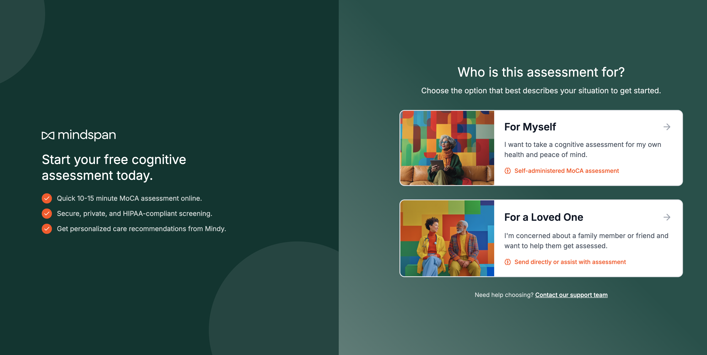

<!DOCTYPE html>
<html lang="en">

<head>
  <meta charset="UTF-8">
  <meta name="viewport" content="width=device-width, initial-scale=1.0">
  <meta name="theme-color" content="#FBF7F0">
  <title>Care Pathway Builder</title>
  <!-- Fonts: EB Garamond (display/headings), Figtree (UI/body), PT Serif (drop caps) -->
  <link rel="preconnect" href="https://fonts.googleapis.com">
  <link rel="preconnect" href="https://fonts.gstatic.com" crossorigin>
  <link href="https://fonts.googleapis.com/css2?family=EB+Garamond:wght@400;500;600;700&family=Figtree:wght@300;400;500;600;700&family=PT+Serif:wght@400;700&display=swap" rel="stylesheet">

  <!-- Tailwind CSS -->
  <script src="https://cdn.tailwindcss.com"></script>
  <script>
    tailwind.config = {
      theme: {
        extend: {
          colors: {
            cream: '#FBF7F0',
            sand: '#E9DECB',
            sandSoft: '#F0E6D5',
            sky: '#E2D4BC',
            skySoft: '#EDE5D6',
            ink: '#201E17',
            inkSoft: '#5F584A',
            inkMuted: '#8A8270',
            teal: {
              DEFAULT: '#083630',
              light: '#1f514a',
              soft: '#0e4a42',
            },
            accent: {
              DEFAULT: '#fb4d17',
              text: '#c93a0e',
              soft: '#fde4d9',
            },
            // Node-type warm palette
            node: {
              assess: '#A8431F',
              decide: '#1f514a',
              treat: '#5C6B3A',
              monitor: '#A87D2A',
              outcome: '#5C2D2A',
            },
            guideOverlay: '#4B2A3E',
          },
          fontFamily: {
            serif: ['"EB Garamond"', 'Georgia', 'serif'],
            sans: ['Figtree', 'system-ui', 'sans-serif'],
            drop: ['"PT Serif"', 'Georgia', 'serif'],
          },
          borderRadius: {
            pill: '10rem',
          },
        }
      }
    }
  </script>
  <style>
    html, body { margin: 0; padding: 0; }

    body {
      background-color: #FBF7F0;
      color: #201E17;
      font-family: 'Figtree', system-ui, sans-serif;
      font-feature-settings: 'tnum' off;
      -webkit-font-smoothing: antialiased;
      -moz-osx-font-smoothing: grayscale;
      line-height: 1.47;
    }

    ::selection {
      background-color: rgba(251, 77, 23, 0.28);
    }

    /* Italics render as upright weight 600 — Garamond italic is illegible at body sizes for older readers */
    em, i { font-style: normal; font-weight: 600; }

    /* Editorial display surface — cream with subtle inner highlight */
    .editorial-panel {
      background-color: #FBF7F0;
      border: 1px solid rgba(32, 30, 23, 0.08);
      box-shadow: inset 0 1px 0 rgba(255, 255, 255, 0.6);
    }

    /* Sand card — used for resting interactive surfaces (OptionCard equivalent) */
    .sand-card {
      background-color: #E9DECB;
      border: 1px solid rgba(32, 30, 23, 0.08);
      box-shadow:
        inset 0 1px 0 rgba(255, 255, 255, 0.55),
        0 1px 2px rgba(32, 30, 23, 0.04),
        0 8px 24px -12px rgba(32, 30, 23, 0.08);
    }

    /* Cream card — used for content panels (chapters, recommendations) */
    .cream-card {
      background-color: #FBF7F0;
      border: 1px solid rgba(32, 30, 23, 0.08);
      box-shadow:
        inset 0 1px 0 rgba(255, 255, 255, 0.7),
        0 1px 2px rgba(32, 30, 23, 0.05),
        0 6px 18px -10px rgba(32, 30, 23, 0.1);
    }

    /* Lift on hover for choice-cards (PathwayCard ethos) */
    .lift-on-hover {
      transition: transform 0.22s cubic-bezier(0.22, 0.61, 0.36, 1),
                  box-shadow 0.22s cubic-bezier(0.22, 0.61, 0.36, 1);
    }
    .lift-on-hover:hover {
      transform: translateY(-2px);
      box-shadow:
        inset 0 1px 0 rgba(255, 255, 255, 0.6),
        0 4px 10px rgba(32, 30, 23, 0.07),
        0 16px 32px -12px rgba(32, 30, 23, 0.18);
    }

    /* Eyebrow atom — Figtree 600, uppercase, tracked */
    .eyebrow {
      font-family: 'Figtree', system-ui, sans-serif;
      font-weight: 600;
      text-transform: uppercase;
      letter-spacing: 0.16em;
      font-size: 0.6875rem;
      color: #5F584A;
      line-height: 1.2;
    }

    .eyebrow-pill {
      display: inline-flex;
      align-items: center;
      gap: 0.5rem;
      padding: 0.375rem 0.75rem;
      border-radius: 10rem;
      background-color: #E9DECB;
      border: 1px solid rgba(32, 30, 23, 0.08);
    }

    /* Soft border token */
    .border-soft { border-color: rgba(32, 30, 23, 0.08); }
    .border-soft-strong { border-color: rgba(32, 30, 23, 0.14); }

    /* Pill button base */
    .btn-pill {
      display: inline-flex;
      align-items: center;
      justify-content: center;
      gap: 0.5rem;
      padding: 0.625rem 1.125rem;
      border-radius: 10rem;
      font-weight: 600;
      font-size: 0.875rem;
      letter-spacing: -0.005em;
      transition: all 0.18s cubic-bezier(0.22, 0.61, 0.36, 1);
      border: 1px solid transparent;
      cursor: pointer;
    }
    .btn-primary {
      background-color: #083630;
      color: #FBF7F0;
    }
    .btn-primary:hover {
      background-color: #1f514a;
      transform: translateY(-1px);
      box-shadow: 0 8px 20px -8px rgba(8, 54, 48, 0.4);
    }
    .btn-ghost {
      background-color: transparent;
      color: #5F584A;
      border-color: rgba(32, 30, 23, 0.08);
    }
    .btn-ghost:hover {
      background-color: rgba(32, 30, 23, 0.04);
      color: #201E17;
    }

    /* Custom scrollbar */
    ::-webkit-scrollbar { width: 8px; height: 8px; }
    ::-webkit-scrollbar-track { background: transparent; }
    ::-webkit-scrollbar-thumb {
      background: rgba(32, 30, 23, 0.18);
      border-radius: 4px;
    }
    ::-webkit-scrollbar-thumb:hover {
      background: rgba(32, 30, 23, 0.34);
    }

    /* Focus-visible — orange brand outline */
    *:focus { outline: none; }
    *:focus-visible {
      outline: 2px solid #fb4d17;
      outline-offset: 3px;
      border-radius: 4px;
    }
    button.btn-pill:focus-visible {
      outline-offset: 3px;
      border-radius: 10rem;
    }

    /* Animations */
    .animate-fade-in-up {
      animation: fadeInUp 0.42s cubic-bezier(0.16, 1, 0.3, 1) forwards;
      opacity: 0;
    }
    @keyframes fadeInUp {
      from { opacity: 0; transform: translateY(8px); }
      to   { opacity: 1; transform: translateY(0); }
    }

    /* Reduced-motion: kill ambient animations */
    @media (prefers-reduced-motion: reduce) {
      .animate-fade-in-up { animation: none; opacity: 1; }
      .lift-on-hover { transition: none; }
      .lift-on-hover:hover { transform: none; }
      .btn-pill, .btn-primary:hover { transition: none; transform: none; }
    }

    /* Display headings — EB Garamond, tight tracking */
    .font-display {
      font-family: 'EB Garamond', Georgia, serif;
      letter-spacing: -0.02em;
      line-height: 1.1;
    }

    /* Subtle paper grain so the cream surface doesn't feel flat */
    .paper-grain {
      background-image:
        radial-gradient(circle at 20% 30%, rgba(168, 67, 31, 0.025), transparent 40%),
        radial-gradient(circle at 80% 70%, rgba(8, 54, 48, 0.02), transparent 40%);
    }

    /* Artifact drawer — slide-in panel that surfaces the live runtime artifact
       a particular pathway node produces (pre-visit briefing, MoCA delivery,
       digital-twin trajectory). Right-edge slide-in at lg+, bottom sheet at <lg. */
    .artifact-drawer-backdrop {
      position: fixed;
      inset: 0;
      z-index: 40;
      background-color: rgba(32, 30, 23, 0.36);
      opacity: 0;
      pointer-events: none;
      transition: opacity 0.32s cubic-bezier(0.22, 0.61, 0.36, 1);
    }
    .artifact-drawer-backdrop.open {
      opacity: 1;
      pointer-events: auto;
    }
    .artifact-drawer {
      position: fixed;
      background-color: #FBF7F0;
      z-index: 50;
      display: flex;
      flex-direction: column;
      border: 1px solid rgba(32, 30, 23, 0.14);
      box-shadow:
        -24px 0 48px -16px rgba(32, 30, 23, 0.22),
        0 1px 2px rgba(32, 30, 23, 0.05);
      transition: transform 0.42s cubic-bezier(0.22, 0.61, 0.36, 1);
    }
    @media (min-width: 1024px) {
      .artifact-drawer {
        right: 0;
        top: 0;
        bottom: 0;
        width: clamp(420px, 44rem, 52vw);
        transform: translateX(100%);
        border-left: 1.5px solid rgba(32, 30, 23, 0.18);
      }
      .artifact-drawer.open { transform: translateX(0); }
    }
    @media (max-width: 1023px) {
      .artifact-drawer {
        left: 0;
        right: 0;
        bottom: 0;
        top: auto;
        height: 92vh;
        border-radius: 1.5rem 1.5rem 0 0;
        transform: translateY(100%);
        border-top: 1.5px solid rgba(32, 30, 23, 0.18);
        box-shadow:
          0 -20px 40px -16px rgba(32, 30, 23, 0.22),
          0 1px 2px rgba(32, 30, 23, 0.05);
      }
      .artifact-drawer.open { transform: translateY(0); }
    }
    @media (prefers-reduced-motion: reduce) {
      .artifact-drawer, .artifact-drawer-backdrop { transition: none; }
    }
  </style>

  <!-- React & ReactDOM -->
  <script crossorigin src="https://unpkg.com/react@18/umd/react.production.min.js"></script>
  <script crossorigin src="https://unpkg.com/react-dom@18/umd/react-dom.production.min.js"></script>

  <!-- Babel -->
  <script src="https://unpkg.com/@babel/standalone/babel.min.js"></script>
</head>

<body class="h-screen w-full overflow-hidden flex flex-col font-sans">
  <div id="root" class="h-full w-full flex flex-col"></div>

  <script type="text/babel">
    const { useState, useEffect, useMemo, useRef } = React;

    // Custom Icons SVG components
    const IconActivity = () => <svg xmlns="http://www.w3.org/2000/svg" width="18" height="18" viewBox="0 0 24 24" fill="none" stroke="currentColor" strokeWidth="1.75" strokeLinecap="round" strokeLinejoin="round"><polyline points="22 12 18 12 15 21 9 3 6 12 2 12"></polyline></svg>;
    const IconGitBranch = () => <svg xmlns="http://www.w3.org/2000/svg" width="18" height="18" viewBox="0 0 24 24" fill="none" stroke="currentColor" strokeWidth="1.75" strokeLinecap="round" strokeLinejoin="round"><line x1="6" y1="3" x2="6" y2="15"></line><circle cx="18" cy="6" r="3"></circle><circle cx="6" cy="18" r="3"></circle><path d="M18 9a9 9 0 0 1-9 9"></path></svg>;
    const IconTrendingUp = () => <svg xmlns="http://www.w3.org/2000/svg" width="18" height="18" viewBox="0 0 24 24" fill="none" stroke="currentColor" strokeWidth="1.75" strokeLinecap="round" strokeLinejoin="round"><polyline points="23 6 13.5 15.5 8.5 10.5 1 18"></polyline><polyline points="17 6 23 6 23 12"></polyline></svg>;
    const IconAlertCircle = () => <svg xmlns="http://www.w3.org/2000/svg" width="18" height="18" viewBox="0 0 24 24" fill="none" stroke="currentColor" strokeWidth="1.75" strokeLinecap="round" strokeLinejoin="round"><circle cx="12" cy="12" r="10"></circle><line x1="12" y1="8" x2="12" y2="12"></line><line x1="12" y1="16" x2="12.01" y2="16"></line></svg>;
    const IconCheckCircle = () => <svg xmlns="http://www.w3.org/2000/svg" width="18" height="18" viewBox="0 0 24 24" fill="none" stroke="currentColor" strokeWidth="1.75" strokeLinecap="round" strokeLinejoin="round"><path d="M22 11.08V12a10 10 0 1 1-5.93-9.14"></path><polyline points="22 4 12 14.01 9 11.01"></polyline></svg>;
    const IconTrash2 = () => <svg xmlns="http://www.w3.org/2000/svg" width="16" height="16" viewBox="0 0 24 24" fill="none" stroke="currentColor" strokeWidth="1.75" strokeLinecap="round" strokeLinejoin="round"><polyline points="3 6 5 6 21 6"></polyline><path d="M19 6v14a2 2 0 0 1-2 2H7a2 2 0 0 1-2-2V6m3 0V4a2 2 0 0 1 2-2h4a2 2 0 0 1 2 2v2"></path><line x1="10" y1="11" x2="10" y2="17"></line><line x1="14" y1="11" x2="14" y2="17"></line></svg>;
    const IconLock = () => <svg xmlns="http://www.w3.org/2000/svg" width="13" height="13" viewBox="0 0 24 24" fill="none" stroke="currentColor" strokeWidth="1.75" strokeLinecap="round" strokeLinejoin="round"><rect x="3" y="11" width="18" height="11" rx="2" ry="2"></rect><path d="M7 11V7a5 5 0 0 1 10 0v4"></path></svg>;
    const IconUnlock = () => <svg xmlns="http://www.w3.org/2000/svg" width="13" height="13" viewBox="0 0 24 24" fill="none" stroke="currentColor" strokeWidth="1.75" strokeLinecap="round" strokeLinejoin="round"><rect x="3" y="11" width="18" height="11" rx="2" ry="2"></rect><path d="M7 11V7a5 5 0 0 1 9.9-1"></path></svg>;
    const IconPlus = () => <svg xmlns="http://www.w3.org/2000/svg" width="13" height="13" viewBox="0 0 24 24" fill="none" stroke="currentColor" strokeWidth="1.75" strokeLinecap="round" strokeLinejoin="round"><line x1="12" y1="5" x2="12" y2="19"></line><line x1="5" y1="12" x2="19" y2="12"></line></svg>;
    const IconCornerDown = () => <svg xmlns="http://www.w3.org/2000/svg" width="12" height="12" viewBox="0 0 24 24" fill="none" stroke="currentColor" strokeWidth="1.75" strokeLinecap="round" strokeLinejoin="round"><polyline points="9 10 4 15 9 20"></polyline><path d="M20 4v7a4 4 0 0 1-4 4H4"></path></svg>;
    const IconUsers = ({ size = 12 }) => <svg xmlns="http://www.w3.org/2000/svg" width={size} height={size} viewBox="0 0 24 24" fill="none" stroke="currentColor" strokeWidth="1.85" strokeLinecap="round" strokeLinejoin="round"><path d="M17 21v-2a4 4 0 0 0-4-4H5a4 4 0 0 0-4 4v2"></path><circle cx="9" cy="7" r="4"></circle><path d="M23 21v-2a4 4 0 0 0-3-3.87"></path><path d="M16 3.13a4 4 0 0 1 0 7.75"></path></svg>;
    const IconFileText = ({ size = 14 }) => <svg xmlns="http://www.w3.org/2000/svg" width={size} height={size} viewBox="0 0 24 24" fill="none" stroke="currentColor" strokeWidth="1.85" strokeLinecap="round" strokeLinejoin="round"><path d="M14 2H6a2 2 0 0 0-2 2v16a2 2 0 0 0 2 2h12a2 2 0 0 0 2-2V8z"></path><polyline points="14 2 14 8 20 8"></polyline><line x1="9" y1="13" x2="15" y2="13"></line><line x1="9" y1="17" x2="15" y2="17"></line></svg>;
    const IconClock = ({ size = 12 }) => <svg xmlns="http://www.w3.org/2000/svg" width={size} height={size} viewBox="0 0 24 24" fill="none" stroke="currentColor" strokeWidth="1.85" strokeLinecap="round" strokeLinejoin="round"><circle cx="12" cy="12" r="10"></circle><polyline points="12 6 12 12 16 14"></polyline></svg>;

    const NODE_TYPES = [
      { id: 'assess',  label: 'Assess',  hex: '#A8431F', icon: <IconAlertCircle /> },
      { id: 'decide',  label: 'Decide',  hex: '#1f514a', icon: <IconGitBranch /> },
      { id: 'treat',   label: 'Treat',   hex: '#5C6B3A', icon: <IconActivity /> },
      { id: 'monitor', label: 'Monitor', hex: '#A87D2A', icon: <IconTrendingUp /> },
      { id: 'outcome', label: 'Outcome', hex: '#5C2D2A', icon: <IconCheckCircle /> }
    ];

    // Prescribables — keyed by node type. Each prescribable can be toggled into a node's
    // active set. Selecting one renders its nested flow under the prescribable row.
    // `locked: true` means escalated approval is required before it can be added.
    const PRESCRIBABLES = {
      assess: [
        // Cognitive + behavioral screens
        { id: 'moca',        label: 'MoCA cognitive screen',               nestedFlow: ['Administered remotely or in-clinic', '30-point score captured in Athena', 'Score < 26 flags impairment'], precondition: 'Only required if no MoCA score documented in the last 6 months' },
        { id: 'mis',         label: 'MIS memory impairment screen',         nestedFlow: ['Four-item delayed recall', 'Score 0-8 documented', 'Score ≤ 4 flags possible dementia'] },
        { id: 'mini-cog',    label: 'Mini-Cog screen',                      nestedFlow: ['Three-word recall + clock draw', 'Score 0-5 documented', 'Score ≤ 2 flags cognitive impairment'] },
        { id: 'ad8',         label: 'AD8 informant interview',              nestedFlow: ['Informant completes eight-item screen', 'Score ≥ 2 flags possible dementia', 'Care nav reviews + escalates'] },
        { id: 'phq-9',       label: 'PHQ-9 depression screen',              nestedFlow: ['Nine-item screen administered', 'Score 0-27 captured in Athena', 'Score ≥ 10 routes to behavioral health'] },
        { id: 'gad-7',       label: 'GAD-7 anxiety screen',                 nestedFlow: ['Seven-item screen administered', 'Score 0-21 captured in Athena', 'Score ≥ 10 routes to behavioral health'] },
        { id: 'gds-15',      label: 'GDS-15 geriatric depression scale',    nestedFlow: ['Fifteen-item screen for older adults', 'Score ≥ 5 flags depression', 'Routes to PCP follow-up'] },
        { id: 'adl-iadl',    label: 'ADL / IADL functional assessment',     nestedFlow: ['Activities of daily living scored', 'IADLs reviewed by care nav', 'Decline triggers home-safety routing'] },
        { id: 'falls-risk',  label: 'STEADI falls risk assessment',         nestedFlow: ['Three-question STEADI screen', 'Positive screen → gait + balance check', 'Home-safety tasks routed'] },
        { id: 'med-review',  label: 'Medication reconciliation',            nestedFlow: ['All home meds + supplements reviewed', 'High-risk meds flagged for deprescribing', 'Pharmacist consult queued'] },
        { id: 'audit-c',     label: 'AUDIT-C alcohol screen',               nestedFlow: ['Three-item alcohol-use screen', 'Positive screen → brief intervention', 'Documented at intake'] },
        { id: 'hrsn',        label: 'HRSN screening (AHC / PRAPARE)',       nestedFlow: ['Screen completed', 'Positive domains identified', 'Community referral loop opened'] },
        { id: 'biomarkers',  label: 'Biomarkers + MRI review',              nestedFlow: ['Dementia lab panel resulted', 'MRI report reviewed by provider', 'Surveillance imaging on schedule'], locked: true, lockReason: 'Neurology consult prerequisite' },
        // Perry Health operational pre-visit tasks (99205 + 99483 share these)
        { id: 'verify-insurance', label: 'Verify insurance is active',         nestedFlow: ['RCM confirms eligibility in NGS + Athena at T-7', 'Escalates inactive coverage to MFA approver same day'] },
        { id: 'send-intake',      label: 'Send intake + history packet',      nestedFlow: ['Delivered via preferred channel within 1 business day of booking', 'Receipt confirmed ≥5 business days pre-visit'] },
        { id: 'confirm-caregiver', label: 'Confirm caregiver will attend',    nestedFlow: ['Caregiver Liaison confirms attendance ≥5 business days pre-visit', 'Reason logged + clinician notified if absent'] },
        { id: 'verify-labs',      label: 'Verify dementia lab orders placed', nestedFlow: ['MA confirms B12, TSH, CMP, CBC resulted or queued at T-7', 'Re-orders results older than 6 months at the visit'] },
        { id: 'confirm-referral', label: 'Confirm referral attached in Athena', nestedFlow: ['Enrollment verifies referral at booking', 'Opens callback task + gates fax-records step if missing'] },
        { id: 'fax-records',      label: 'Fax medical record request',        nestedFlow: ['Care Coordination faxes records request when prior records missing', 'Re-fires at 5 days; escalates at 10 days unclosed'] },
        { id: 'prep-room-moca',   label: 'Prep room for in-clinic MoCA',      nestedFlow: ['MA stages screening materials morning of visit', 'Marks room ready in Athena pre-visit checklist'] },
        // Perry Health 99215-specific pre-visit checks
        { id: 'mri-reviewed',     label: 'Confirm MRI report reviewed',        nestedFlow: ['Provider confirms MRI report reviewed in chart', 'Documented one week pre-visit'] },
        { id: 'cognitive-reassess', label: 'Confirm cognitive reassessment status', nestedFlow: ['MA confirms cognitive reassessment on six-month cadence', 'Triggers re-administration if overdue'] },
      ],
      decide: [
        { id: 'cms-elig',          label: 'CMS eligibility pre-screen',          nestedFlow: ['Medicare A+B verified', 'Not in MA/PACE/hospice', 'Not LTNH resident'] },
        { id: 'cdr-fast',          label: 'Dementia staging (CDR/FAST)',         nestedFlow: ['CDR administered', 'FAST stage scored', 'Tier 1–5 assigned'] },
        { id: 'zbi-22',            label: 'Caregiver burden (ZBI-22)',           nestedFlow: ['Full 22-item ZBI completed', 'Burden score 0–88 calculated', 'Dyad tier finalized'], locked: true, lockReason: 'ZBI-22 administration cert' },
        { id: 'care-plan-review',  label: 'Care plan review',                    nestedFlow: ['Annual review scheduled', 'PCP signoff requested', 'Updates sent to family'] },
        { id: 'adherence',         label: 'Adherence check',                     nestedFlow: ['Medication refills reviewed', 'Visit attendance audited', 'Below-threshold drops flagged'] },
        { id: 'readiness-sweep',   label: 'Readiness sweep (T-14 / T-7 / T-2)',  nestedFlow: ['Two-week readiness sweep + remediation', 'One-week sweep escalates red items', 'Final readiness call locks Green/Yellow/Red at T-2'] },
      ],
      treat: [
        { id: 'wellness',           label: 'General wellness',          nestedFlow: ['Lifestyle education delivered', 'Annual flu administered', 'Exercise referral placed'] },
        { id: 'med-adj',            label: 'Medication adjustment',     nestedFlow: ['High-risk med list audited', 'Deprescribing where indicated', 'Pharmacist consult'] },
        { id: 'dcm',                label: 'Dementia care management',  nestedFlow: ['Weekly case-mgmt calls', 'Care plan reviewed monthly', 'Caregiver coaching scheduled'] },
        { id: 'caregiver-support',  label: 'Caregiver support program', nestedFlow: ['Skills training enrolled', 'Support group matched', '1:1 calls with care nav'] },
        { id: 'bpsd-mgmt',          label: 'BPSD management',           nestedFlow: ['Behavioral plan documented', 'High-risk meds reviewed', 'Escalation paths set'] },
        { id: 'guide-plan',         label: 'GUIDE care plan',           nestedFlow: ['Care navigator assigned', 'Tier-based DCMP billing live', '24/7 helpline activated', 'PROMIS-10 baseline captured'], locked: true, lockReason: 'CMS GUIDE PAAF enrollment' },
        { id: 'respite',            label: 'Respite services',          nestedFlow: ['In-home aide visit booked', 'Caregiver day off planned', 'Hours tracked vs $2,500/yr cap'], locked: true, lockReason: 'Partner roster + benefit check' },
        { id: 'neurology-consult',  label: 'Neurology consult',         nestedFlow: ['Referral placed', 'Specialist appointment booked', 'Report routed to PCP'], locked: true, lockReason: 'Specialist network capacity' },
        // Perry Health visit-execution tasks
        { id: 'deliver-prep-packet', label: 'Deliver clinician prep packet ≥60 min pre-visit', nestedFlow: ['Care Coordination delivers prep packet via secure message', 'Member summary, scores, suggested agenda + outstanding items'] },
        { id: 'conduct-205',         label: 'Conduct 99205 evaluation + sign note',           nestedFlow: ['Provider signs evaluation note in Athena same business day', 'Documents high MDM OR 60–74 minutes time-spent'] },
        { id: 'conduct-483',         label: 'Conduct comprehensive assessment + sign note',   nestedFlow: ['Provider signs Care Plan Visit note same business day', 'All ten required elements + medical-necessity statement captured'] },
        { id: 'conduct-215',         label: 'Conduct follow-up + sign visit note',            nestedFlow: ['Provider signs follow-up note in Athena same business day', 'Time-spent captured'] },
      ],
      monitor: [
        { id: 'cdr-stage',      label: 'CDR stage',              nestedFlow: ['Annual CDR re-administer', 'Stage compared to baseline', 'Tier change triggers logged'] },
        { id: 'zbi-score',      label: 'ZBI-22 burden score',    nestedFlow: ['Annual ZBI re-administer', 'Trend vs baseline charted', 'Mid-cycle re-tier rule'] },
        { id: 'cp-adherence',   label: 'Care plan adherence',    nestedFlow: ['Task completion tracked', 'SLA breaches surfaced', 'Remediation tasks created'] },
        { id: 'bpsd-freq',      label: 'BPSD frequency',         nestedFlow: ['Behavior log captured', 'Trends visualized', 'Escalation thresholds set'] },
        { id: 'promis-10',      label: 'PROMIS-10 QoL',          nestedFlow: ['PROMIS-10 administered', 'QoL score reported', 'CMS quality measure submitted'], locked: true, lockReason: 'Care navigator certification' },
        { id: 'digital-twin',   label: 'Digital twin progression', nestedFlow: ['Biological progression updated weekly', 'Trajectory model refreshed', 'Pre-visit packet attached'], locked: true, lockReason: 'Digital Twin license + data feed' },
      ],
      outcome: [
        // Clinical outcome metrics
        { id: 'slow-decline',      label: 'Slow cognitive decline',  nestedFlow: ['CDR trend < 0.5/yr', 'ADLs preserved', 'PROMIS-10 ≥ baseline'] },
        { id: 'reduce-burden',     label: 'Reduce caregiver burden', nestedFlow: ['ZBI down ≥ 5 points', 'Respite hours used', 'Support group attendance'] },
        { id: 'maintain-adls',     label: 'Maintain ADLs',           nestedFlow: ['Functional independence tracked', 'Falls prevented', 'Hospitalization avoided'] },
        { id: 'prevent-hosp',      label: 'Prevent hospitalization', nestedFlow: ['Acute ED visits tracked', 'Hospital admits flagged', 'Care plan adjusted'] },
        { id: 'guide-compliance',  label: 'CMS GUIDE compliance',    nestedFlow: ['PAAF submitted on time', 'DCMP billed accurately', 'Records retained 6 yrs'], locked: true, lockReason: 'CMS GUIDE PA active' },
        // Perry Health post-visit extraction tasks
        { id: 'review-orders',       label: 'Review note for orders correctness',    nestedFlow: ['Confirms every ordered item in Athena within 1 business day', 'Remediates gaps within 2 business days'] },
        { id: 'confirm-scheduling',  label: 'Confirm downstream visit scheduling',    nestedFlow: ['Verifies next visit booked at appropriate cadence', 'Books follow-up if missing'] },
        { id: 'route-safety',        label: 'Route post-visit safety actions',        nestedFlow: ['Driving, falls, wandering, firearms, medication, home-safety tasks routed', 'All within 1 business day of signed note'] },
        { id: 'verify-elements',     label: 'Verify ten care-plan elements documented', nestedFlow: ['Care Coordination audits Care Plan Visit note within 1 business day', 'Gaps remediated same week'] },
        { id: 'verify-orders',       label: 'Verify post-visit orders are placed',    nestedFlow: ['Confirms ordered items in Athena', 'Escalates missing orders to provider'] },
        { id: 'route-follow-ups',    label: 'Route care-plan follow-up actions',      nestedFlow: ['Follow-up actions tasked to owners', 'Downstream visits booked within 48 hours of signed note'] },
      ],
    };

    // Tri-state values for the enabled-workflow control.
    const STATE_OFF = 'off';
    const STATE_APPROVAL = 'approval';
    const STATE_ON = 'on';
    const STATE_OPTIONS = [
      { id: STATE_OFF,      label: 'Off' },
      { id: STATE_APPROVAL, label: 'Approval' },
      { id: STATE_ON,       label: 'On' },
    ];
    const STATE_COLORS = {
      [STATE_OFF]:      { bg: 'rgba(32, 30, 23, 0.08)',  text: '#5F584A' },
      [STATE_APPROVAL]: { bg: 'rgba(251, 77, 23, 0.14)', text: '#c93a0e' },
      [STATE_ON]:       { bg: 'rgba(8, 54, 48, 0.12)',   text: '#083630' },
    };

    // Build a phase-level node compactly. `selected` is the list of protocols
    // permitted by default at this node — each becomes a workflow with state 'on'.
    // Operators can demote any to 'approval' or 'off' at runtime.
    const phaseNode = (id, typeId, title, subtitle, selected) => {
      const sel = selected || [];
      const states = {};
      sel.forEach(pid => { states[pid] = STATE_ON; });
      return {
        id,
        typeId,
        type: NODE_TYPES.find(t => t.id === typeId),
        title,
        subtitle,
        data: { states }
      };
    };

    // Each visit type is itself a sub-pathway. A visit has its own pre / during /
    // post phase nodes and corresponds to a CMS-billable encounter (or, for GUIDE,
    // the dementia care management program). Visit phase data is grounded in Perry
    // Health's workflow-library (care_orchestration_{99205|99483|99215}_*).
    const VISIT_DEFS = {
      '99205': {
        code: 'CPT 99205',
        label: 'New patient office visit',
        hex: '#A8431F', // clay
        phases: [
          phaseNode('205-pre', 'assess', '99205 pre-visit preparation',
            'RCM, Member Experience, and Care Coordination confirm readiness ≥7 business days before the new-patient encounter.',
            ['moca', 'mis', 'confirm-caregiver', 'confirm-referral', 'verify-insurance']),
          phaseNode('205-gate', 'decide', '99205 T-2 readiness decision',
            'Caregiver attendance, insurance, referral, and screening completion locked two business days pre-visit.',
            ['readiness-sweep']),
          phaseNode('205-during', 'treat', '99205 visit execution',
            'Provider delivers the new-patient evaluation and signs the note same business day with high MDM or 60–74 minutes time-spent.',
            ['deliver-prep-packet', 'conduct-205']),
          phaseNode('205-monitor', 'monitor', '99205 post-visit monitoring',
            'Orders, downstream visits, and safety tasks tracked through 7 days post-visit.',
            ['cp-adherence']),
          phaseNode('205-post', 'outcome', '99205 post-visit extraction',
            'Care Coordination reviews the signed note, schedules follow-ups, and routes safety tasks within 1 business day.',
            ['review-orders', 'confirm-scheduling', 'route-safety']),
        ],
      },
      '99483': {
        code: 'CPT 99483',
        label: 'Cognitive assessment & care plan',
        hex: '#A87D2A', // ochre
        phases: [
          phaseNode('483-pre', 'assess', '99483 pre-visit preparation',
            'Same eight-task readiness set as 99205 — insurance, intake, caregiver, MoCA + MIS, labs, referral, fax records, room prep.',
            ['moca', 'adl-iadl', 'confirm-caregiver', 'verify-labs', 'confirm-referral']),
          phaseNode('483-gate', 'decide', '99483 pre-visit readiness gate',
            'Three-step readiness sweep (T-14, T-7, T-2) locks Green / Yellow / Red status before the Care Plan visit.',
            ['readiness-sweep']),
          phaseNode('483-during', 'treat', '99483 care plan visit execution',
            'Provider signs Care Plan Visit note same business day with all ten required elements + medical-necessity statement.',
            ['deliver-prep-packet', 'conduct-483']),
          phaseNode('483-monitor', 'monitor', '99483 element + adherence monitoring',
            'Ten required care-plan elements verified; adherence and escalations tracked weekly post-visit.',
            ['cp-adherence']),
          phaseNode('483-post', 'outcome', '99483 post-visit extraction',
            'Care Coordination routes follow-up actions to owners and books downstream visits within 48 hours of signed note.',
            ['verify-elements', 'verify-orders', 'route-follow-ups']),
        ],
      },
      '99215': {
        code: 'CPT 99215',
        label: 'Established patient follow-up',
        hex: '#5C2D2A', // plum
        phases: [
          phaseNode('215-pre', 'assess', '99215 pre-visit review',
            'MA confirms outstanding labs + biomarkers; provider reviews MRI report and reassessment cadence one week pre-visit.',
            ['med-review', 'biomarkers', 'mri-reviewed', 'cognitive-reassess']),
          phaseNode('215-gate', 'decide', '99215 adherence + reassessment decision',
            'Below-threshold adherence flagged; six-month cognitive reassessment cadence confirmed before the visit.',
            ['adherence', 'cdr-fast']),
          phaseNode('215-during', 'treat', '99215 follow-up execution',
            'Provider signs follow-up note in Athena same business day with time-spent captured.',
            ['deliver-prep-packet', 'conduct-215', 'bpsd-mgmt']),
          phaseNode('215-monitor', 'monitor', '99215 digital twin + BPSD monitoring',
            'Digital Twin progression refreshed; BPSD frequency logged and trended for the next visit.',
            ['bpsd-freq', 'digital-twin']),
          phaseNode('215-post', 'outcome', '99215 post-visit safety mitigation',
            'Care Coordination routes post-visit safety mitigation tasks within 1 business day of signed note.',
            ['verify-orders', 'confirm-scheduling', 'route-safety']),
        ],
      },
      'guide': {
        code: 'CMS GUIDE',
        label: 'Dementia Care Management program',
        hex: '#4B2A3E', // mulberry
        phases: [
          phaseNode('guide-p1', 'assess', 'Identification + eligibility',
            'CMS pre-screen: Medicare A+B, not in MA / PACE / hospice; dementia attested by rostered clinician.',
            ['hrsn']),
          phaseNode('guide-p2', 'decide', 'Voluntary alignment + tier',
            'Patient consents; CDR / FAST + ZBI-22 score dyad tier 1–5.',
            ['cms-elig']),
          phaseNode('guide-p3', 'treat', 'Comprehensive care plan',
            'In-home visit, PROMIS-10, HRSN; plan shared with PCP.',
            ['guide-plan', 'caregiver-support']),
          phaseNode('guide-p4', 'monitor', 'Ongoing care (9 domains)',
            '24/7 access, tier-based contact, BPSD, med mgmt, HRSN, respite.',
            ['cp-adherence', 'promis-10', 'digital-twin']),
          phaseNode('guide-p5', 'outcome', 'Annual reassessment + re-tier',
            'Re-administer assessments; update PAAF + tier; record retention 6 years.',
            ['guide-compliance']),
        ],
      },
    };

    // Each pathway is a sequence of visits. Moderate adds 99483 after 99205;
    // severe adds 99215 after that. GUIDE is its own program-style "visit".
    const DEMO_PATHWAYS = {
      mild:     { label: 'Mild pathway',      description: 'Single 99205 new-patient evaluation',          hex: '#5C6B3A', visits: ['99205'] },
      moderate: { label: 'Moderate pathway',  description: '99205 evaluation linking into 99483 care plan', hex: '#A87D2A', visits: ['99205', '99483'] },
      severe:   { label: 'Severe pathway',    description: '99205 → 99483 → 99215 ongoing follow-up',       hex: '#A8431F', visits: ['99205', '99483', '99215'] },
      guide:    { label: 'CMS GUIDE overlay', description: 'Tier-based DCMP + caregiver support',           hex: '#4B2A3E', visits: ['guide'] },
    };
    const PATHWAY_IDS = ['mild', 'moderate', 'severe', 'guide'];

    // Workflows the referral root toggles. Each pathway is a protocol that
    // Agilon referrals may follow; enabling one opens its column in the canvas.
    const WORKFLOWS = PATHWAY_IDS.map(id => ({ id, ...DEMO_PATHWAYS[id] }));

    // Single unified demo patient. Used by every artifact drawer that surfaces
    // patient-level data so screenshots, briefings, and trend charts all read
    // as the same person. Never seed this with real PHI.
    const DEMO_PATIENT = {
      name: 'Jane Sample',
      lastFirst: 'Sample, Jane',
      dob: '1948-03-11',
      ageYears: 78,
      sex: 'Female',
      email: 'demo-patient@mindspan.demo',
      mrn: 'DEMO-0000-0001',
      phone: '(555) 010-1948',
    };

    // Reisberg seven-stage cognitive-decline model, lifted verbatim (with
    // softened band tints) from Mindspan-Direct-to-Consumer-Digital-Twin/
    // src/lib/twin/stages.ts. MMSE is the underlying continuous signal the
    // projection works in; stages are what we show the user.
    const TWIN_STAGES = [
      { number: 1, mmseLo: 24, mmseHi: 30, shortLabel: 'Healthy baseline', band: '#EAF1E6', ink: '#083630' },
      { number: 2, mmseLo: 18, mmseHi: 24, shortLabel: 'Subtle changes',   band: '#F4ECD9', ink: '#083630' },
      { number: 3, mmseLo: 14, mmseHi: 18, shortLabel: 'Early stage',      band: '#FFE9C9', ink: '#A8431F' },
      { number: 4, mmseLo: 10, mmseHi: 14, shortLabel: 'Mid stage',        band: '#FFD6A6', ink: '#A8431F' },
      { number: 5, mmseLo:  5, mmseHi: 10, shortLabel: 'Progressing',      band: '#FFC089', ink: '#c93a0e' },
      { number: 6, mmseLo:  1, mmseHi:  5, shortLabel: 'Late stage',       band: '#FFA670', ink: '#fb4d17' },
      { number: 7, mmseLo:  0, mmseHi:  1, shortLabel: 'Final stage',      band: '#FF8C55', ink: '#fb4d17' },
    ];

    const MMSE_MIN = 0;
    const MMSE_MAX = 30;

    const mmseToStage = (mmse) => {
      for (const s of TWIN_STAGES) {
        if (mmse >= s.mmseLo && mmse < s.mmseHi) return s;
      }
      return mmse >= TWIN_STAGES[0].mmseHi ? TWIN_STAGES[0] : TWIN_STAGES[TWIN_STAGES.length - 1];
    };

    // Ten-year projection for the demo patient. `baseline` is the model's
    // no-intervention prediction; `intervention` is the same model with the
    // care-pathway interventions applied (BP control, hearing, cognitive
    // engagement). lows/highs frame the 80% confidence band.
    const TWIN_PROJECTION = {
      baseline: {
        years: [0,  2,  4,  6,  8,  10],
        mids:  [20, 18, 16, 14, 12, 10],
        lows:  [18, 16, 14, 12, 10,  7],
        highs: [22, 21, 19, 17, 15, 14],
      },
      intervention: {
        years: [0,  2,    4,  6,  8,    10],
        mids:  [20, 19.5, 18, 17, 15.5, 14.5],
        lows:  [18, 17.5, 16, 15, 13.5, 12.5],
        highs: [22, 21.5, 20, 19, 17.5, 16.5],
      },
    };

    // Format a YYYY-MM-DD as "Mon D, YYYY" for human-readable display in artifacts.
    const formatArtifactDate = (iso) => {
      const [y, m, d] = iso.split('-').map(Number);
      const dt = new Date(Date.UTC(y, m - 1, d));
      return dt.toLocaleDateString('en-US', { month: 'short', day: 'numeric', year: 'numeric', timeZone: 'UTC' });
    };

    // Map an artifact id to its drawer title shown in the sticky header.
    const ARTIFACT_TITLES = {
      'pre-visit-summary': 'GPS · 5-minute pre-visit briefing',
      'entry-points':      'Cognitive screening · 3 delivery channels',
      'digital-twin':      'Digital twin · 10-year projection',
    };

    // Which artifact (if any) a phase-node id surfaces. Phase-node ids look like
    // `${pathwayId}__${visitId}__${phaseId}`; we anchor by suffix so the same
    // artifact attaches across every pathway that shares the underlying visit.
    const getArtifactForNode = (nodeId) => {
      if (!nodeId) return null;
      if (nodeId.endsWith('__99205__205-pre'))    return 'pre-visit-summary';
      if (nodeId.endsWith('__99215__215-monitor')) return 'digital-twin';
      if (nodeId.endsWith('__guide__guide-p4'))    return 'digital-twin';
      return null;
    };

    // Build the canonical phase node ID for a given pathway + visit + phase. Each
    // pathway gets its OWN copies of a visit's phase nodes so independent column
    // state survives when multiple pathways share a visit (e.g. 99205 in mild +
    // moderate + severe).
    const phaseNodeId = (pathwayId, visitId, phaseId) => `${pathwayId}__${visitId}__${phaseId}`;

    // All phase node templates that could appear in the demo — flattened across
    // every (pathway, visit) combination.
    const ALL_PHASE_TEMPLATES = Object.entries(DEMO_PATHWAYS).flatMap(([pathwayId, p]) =>
      p.visits.flatMap(visitId =>
        (VISIT_DEFS[visitId]?.phases || []).map(phase => ({
          ...phase,
          id: phaseNodeId(pathwayId, visitId, phase.id),
          pathwayId,
          visitId,
        }))
      )
    );

    // Compact tri-state pill: shows the current state as a single badge; click
    // opens a small popover with the three options. The popover uses position:
    // fixed (with coords from the trigger's bounding rect) so it escapes the
    // parent NodeCard's stacking context and renders above subsequent cards.
    const TriStateControl = ({ value, onChange }) => {
      const v = value || STATE_OFF;
      const [open, setOpen] = useState(false);
      const [pos, setPos] = useState({ top: 0, left: 0 });
      const triggerRef = useRef(null);
      const popoverRef = useRef(null);

      useEffect(() => {
        if (!open) return;
        const onDoc = (e) => {
          if (popoverRef.current && popoverRef.current.contains(e.target)) return;
          if (triggerRef.current && triggerRef.current.contains(e.target)) return;
          setOpen(false);
        };
        const onScrollOrResize = () => setOpen(false);
        document.addEventListener('mousedown', onDoc);
        window.addEventListener('scroll', onScrollOrResize, true);
        window.addEventListener('resize', onScrollOrResize);
        return () => {
          document.removeEventListener('mousedown', onDoc);
          window.removeEventListener('scroll', onScrollOrResize, true);
          window.removeEventListener('resize', onScrollOrResize);
        };
      }, [open]);

      const handleToggle = (e) => {
        e.stopPropagation();
        if (!open && triggerRef.current) {
          const rect = triggerRef.current.getBoundingClientRect();
          setPos({ top: rect.bottom + 4, left: rect.left });
        }
        setOpen(o => !o);
      };

      const current = STATE_OPTIONS.find(o => o.id === v) || STATE_OPTIONS[0];
      const c = STATE_COLORS[v];
      return (
        <div className="shrink-0" onClick={(e) => e.stopPropagation()}>
          <button
            ref={triggerRef}
            type="button"
            onClick={handleToggle}
            className="inline-flex items-center gap-1 px-2.5 py-1 rounded-pill text-[11px] font-semibold transition-colors"
            style={{
              backgroundColor: c.bg,
              color: c.text,
              border: '1px solid rgba(32,30,23,0.14)',
              letterSpacing: '0.04em',
              minWidth: '70px',
              justifyContent: 'space-between',
            }}
            aria-haspopup="listbox"
            aria-expanded={open}
          >
            <span>{current.label}</span>
            <svg width="9" height="9" viewBox="0 0 12 12" fill="none" aria-hidden="true">
              <path d="M2.5 4.5l3.5 3 3.5-3" stroke="currentColor" strokeWidth="1.5" strokeLinecap="round" strokeLinejoin="round" />
            </svg>
          </button>
          {open && ReactDOM.createPortal(
            <div
              ref={popoverRef}
              role="listbox"
              className="fixed bg-cream rounded-xl p-1 animate-fade-in-up"
              style={{
                top: `${pos.top}px`,
                left: `${pos.left}px`,
                zIndex: 9999,
                border: '1px solid rgba(32,30,23,0.14)',
                boxShadow: '0 8px 24px -8px rgba(32, 30, 23, 0.22), 0 2px 6px rgba(32,30,23,0.08)',
                minWidth: '120px',
              }}
            >
              {STATE_OPTIONS.map(o => {
                const active = o.id === v;
                const co = STATE_COLORS[o.id];
                return (
                  <button
                    key={o.id}
                    type="button"
                    role="option"
                    aria-selected={active}
                    onClick={(e) => { e.stopPropagation(); onChange(o.id); setOpen(false); }}
                    className="w-full text-left px-3 py-1.5 rounded-lg text-[12px] font-semibold transition-colors flex items-center gap-2"
                    style={{
                      backgroundColor: active ? co.bg : 'transparent',
                      color: active ? co.text : '#5F584A',
                    }}
                  >
                    <span
                      className="w-2 h-2 rounded-full shrink-0"
                      style={{ backgroundColor: co.text }}
                    ></span>
                    {o.label}
                  </button>
                );
              })}
            </div>,
            document.body
          )}
        </div>
      );
    };

    // Reusable node card — used by both Build and Demo modes.
    // Each node shows a list of prescribables that can be toggled on/off (added/removed
    // from the patient's flow). Locked prescribables require an escalation approval click
    // before they can be added.
    const NodeCard = ({ node, onRemove, onSetState, showConnector, onOpenArtifact }) => {
      const prescribables = node.prescribables || PRESCRIBABLES[node.typeId] || [];
      const states = node.data?.states || {};
      const stateOf = (pid) => states[pid] || STATE_OFF;
      const enabledCount = prescribables.filter(p => stateOf(p.id) !== STATE_OFF).length;
      const title = node.title || node.type.label;
      const subtitle = node.subtitle;
      const hex = node.type.hex;
      const artifactId = onOpenArtifact ? getArtifactForNode(node.id) : null;
      const artifactLabel = artifactId === 'pre-visit-summary' ? 'GPS briefing'
        : artifactId === 'digital-twin' ? 'Digital twin'
        : 'View live artifact';

      return (
        <div className="relative flex flex-col items-center w-full">
          <div
            className="w-full bg-cream rounded-[1.25rem] p-5 mb-2 relative group transition-all animate-fade-in-up shadow-[0_1px_2px_rgba(32,30,23,0.05),0_8px_22px_-12px_rgba(32,30,23,0.18)]"
            style={{ border: `2px solid ${hex}` }}
          >
            {onRemove && (
              <button
                onClick={() => onRemove(node.id)}
                className="absolute top-3 right-3 text-inkMuted hover:text-accent-text opacity-0 group-hover:opacity-100 transition-opacity z-10 p-1 rounded-full hover:bg-[rgba(32,30,23,0.04)]"
                aria-label="Remove node"
              >
                <IconTrash2 />
              </button>
            )}
            <div className="flex items-start gap-3 mb-3">
              <div
                className="p-2 rounded-[0.75rem] shrink-0 mt-0.5"
                style={{ backgroundColor: `${hex}1A`, color: hex }}
              >
                {node.type.icon}
              </div>
              <div className="flex-1 min-w-0">
                <h3 className="font-display font-medium text-[1.3125rem] text-ink leading-tight">{title}</h3>
                {subtitle && <p className="text-[13px] text-inkSoft mt-1.5 leading-snug">{subtitle}</p>}
              </div>
              {artifactId && (
                <ViewArtifactButton
                  onClick={() => onOpenArtifact(artifactId)}
                  label={artifactLabel}
                />
              )}
            </div>

            {(() => {
              // Split prescribables into "clipped in" (enabled or in approval)
              // and an "other capabilities" basket.
              const enabledItems = prescribables.filter(p => stateOf(p.id) !== STATE_OFF);
              const availableItems = prescribables.filter(p => stateOf(p.id) === STATE_OFF);

              return (
                <div className="mt-3 pt-4 border-t border-soft-strong">
                  <div className="eyebrow mb-3 flex items-center justify-between">
                    <span>Enabled workflows</span>
                    <span className="text-inkMuted normal-case tracking-normal font-normal text-[11px]">{enabledItems.length} clipped in</span>
                  </div>
                  <div className="flex flex-col gap-1.5">
                    {enabledItems.map(p => {
                      const state = stateOf(p.id);
                      const isOn = state === STATE_ON;
                      const isApproval = state === STATE_APPROVAL;

                      const rowStyle = isOn
                        ? { backgroundColor: '#FBF7F0', border: '1px solid rgba(8,54,48,0.30)', boxShadow: 'inset 0 0 0 1px rgba(8,54,48,0.10)' }
                        : { backgroundColor: 'rgba(251,77,23,0.08)', border: '1px solid rgba(251,77,23,0.30)' };

                      const nestedCount = (p.nestedFlow && p.nestedFlow.length) || 0;
                      const inner = (
                        <>
                          <div
                            className="w-full flex items-center gap-3 px-3 py-2 rounded-xl text-[14px] transition-colors"
                            style={rowStyle}
                          >
                            <TriStateControl
                              value={state}
                              onChange={(s) => onSetState(node.id, p.id, s)}
                            />
                            <span className="flex-1 truncate text-ink font-medium">{p.label}</span>
                            {nestedCount > 0 && (
                              <span
                                className="inline-flex items-center gap-1 px-1.5 py-0.5 rounded-pill text-[10.5px] font-semibold shrink-0"
                                style={{
                                  color: isApproval ? '#c93a0e' : hex,
                                  backgroundColor: isApproval ? 'rgba(251,77,23,0.08)' : `${hex}10`,
                                  border: `1px solid ${isApproval ? 'rgba(251,77,23,0.25)' : `${hex}33`}`,
                                }}
                                title={`${nestedCount} dependent task${nestedCount === 1 ? '' : 's'} attached`}
                              >
                                <IconUsers size={11} />
                                <span>{nestedCount}</span>
                              </span>
                            )}
                            {p.locked && isApproval && (
                              <span className="eyebrow text-accent-text shrink-0 hidden md:inline" title={p.lockReason}>
                                {p.lockReason || 'Escalation required'}
                              </span>
                            )}
                          </div>

                          {nestedCount > 0 && (
                            <div
                              className="ml-3 mt-1.5 mb-1.5 pl-3 border-l-2 animate-fade-in-up"
                              style={{ borderColor: isApproval ? 'rgba(251,77,23,0.55)' : `${hex}55` }}
                            >
                              <div
                                className="text-[10.5px] mb-0.5 flex items-center gap-1.5"
                                style={{ color: isApproval ? '#c93a0e' : hex }}
                              >
                                <IconUsers size={11} />
                                <span>{nestedCount} dependent task{nestedCount === 1 ? '' : 's'} attached</span>
                              </div>
                              {p.nestedFlow.map((step, i) => (
                                <div key={i} className="text-[12px] text-inkSoft py-0.5 flex items-start gap-2 leading-snug">
                                  <span className="shrink-0 mt-0.5 opacity-70" style={{ color: isApproval ? '#c93a0e' : hex }}><IconCornerDown /></span>
                                  <span>{step}</span>
                                </div>
                              ))}
                            </div>
                          )}
                        </>
                      );

                      if (p.precondition) {
                        return (
                          <div
                            key={p.id}
                            className="rounded-xl p-2.5 animate-fade-in-up"
                            style={{
                              backgroundColor: 'rgba(168, 67, 31, 0.05)',
                              border: '1px dashed rgba(168, 67, 31, 0.40)',
                            }}
                          >
                            <div className="flex items-start gap-2.5 mb-2 px-1">
                              <span
                                className="shrink-0 inline-flex items-center justify-center w-5 h-5 rounded-full mt-0.5"
                                style={{ backgroundColor: 'rgba(168, 67, 31, 0.15)', color: '#A8431F' }}
                              >
                                <IconClock size={11} />
                              </span>
                              <div className="flex-1 min-w-0">
                                <div className="eyebrow" style={{ color: '#A8431F' }}>Conditional · gated by data</div>
                                <div className="text-[12px] text-ink mt-0.5 leading-snug">{p.precondition}</div>
                              </div>
                            </div>
                            {inner}
                          </div>
                        );
                      }

                      return <div key={p.id}>{inner}</div>;
                    })}
                    {enabledItems.length === 0 && (
                      <p className="text-[13px] text-inkMuted italic">No workflows clipped in yet — pick from the basket below.</p>
                    )}
                  </div>

                  {availableItems.length > 0 && (
                    <div className="mt-4 pt-3 border-t border-soft">
                      <div className="eyebrow mb-2 flex items-center justify-between">
                        <span>Other capabilities · basket</span>
                        <span className="text-inkMuted normal-case tracking-normal font-normal text-[11px]">{availableItems.length} available</span>
                      </div>
                      <div className="flex flex-wrap gap-1.5">
                        {availableItems.map(p => {
                          const targetState = p.locked ? STATE_APPROVAL : STATE_ON;
                          const nestedCount = (p.nestedFlow && p.nestedFlow.length) || 0;
                          const tooltipBase = p.locked ? `${p.label} · ${p.lockReason || 'Requires approval'}` : `Clip in ${p.label}`;
                          const tooltip = nestedCount > 0 ? `${tooltipBase} · ${nestedCount} dependent task${nestedCount === 1 ? '' : 's'} attached` : tooltipBase;
                          return (
                            <button
                              key={p.id}
                              type="button"
                              onClick={() => onSetState(node.id, p.id, targetState)}
                              className="inline-flex items-center gap-1.5 px-2.5 py-1 rounded-pill text-[11.5px] font-medium transition-colors"
                              style={{
                                backgroundColor: p.locked ? 'rgba(251,77,23,0.06)' : 'rgba(32,30,23,0.04)',
                                border: p.locked ? '1px dashed rgba(251,77,23,0.35)' : '1px solid rgba(32,30,23,0.14)',
                                color: p.locked ? '#c93a0e' : '#5F584A',
                              }}
                              title={tooltip}
                            >
                              {p.locked ? <IconLock /> : <IconPlus />}
                              <span>{p.label}</span>
                              {nestedCount > 0 && (
                                <span
                                  className="inline-flex items-center gap-0.5 ml-0.5 pl-1.5 text-[10px] font-semibold opacity-80"
                                  style={{ borderLeft: '1px solid currentColor' }}
                                >
                                  <IconUsers size={10} />
                                  <span>{nestedCount}</span>
                                </span>
                              )}
                            </button>
                          );
                        })}
                      </div>
                    </div>
                  )}

                  {prescribables.length === 0 && (
                    <p className="text-[13px] text-inkMuted italic">No workflows defined for this node type.</p>
                  )}
                </div>
              );
            })()}
          </div>
          {showConnector && (
            <div className="h-7 w-px bg-gradient-to-b from-[rgba(32,30,23,0.3)] to-transparent my-1"></div>
          )}
        </div>
      );
    };

    // The referral root card. Each row toggles whether a pathway is permitted
    // for Agilon referrals; enabling one opens its column in the canvas.
    const RootReferralCard = ({ workflowStates, onSetWorkflowState }) => {
      const assessHex = NODE_TYPES.find(t => t.id === 'assess').hex;
      const enabledCount = WORKFLOWS.filter(w => (workflowStates[w.id] || STATE_OFF) !== STATE_OFF).length;

      return (
        <div className="relative flex flex-col items-center w-full">
          <div
            className="w-full bg-cream rounded-[1.25rem] p-5 mb-2 relative shadow-[0_1px_2px_rgba(32,30,23,0.05),0_8px_22px_-12px_rgba(32,30,23,0.18)] animate-fade-in-up"
            style={{ border: `2px solid ${assessHex}` }}
          >
            <div className="flex items-start gap-3 mb-3">
              <div
                className="p-2 rounded-[0.75rem] shrink-0 mt-0.5"
                style={{ backgroundColor: `${assessHex}1A`, color: assessHex }}
              >
                <IconAlertCircle />
              </div>
              <div className="flex-1 min-w-0">
                <h3 className="font-display font-medium text-[1.3125rem] text-ink leading-tight">Agilon referral</h3>
              </div>
            </div>

            <div className="mt-3 pt-4 border-t border-soft-strong">
              <div className="eyebrow mb-3 flex items-center justify-between">
                <span>Enabled workflows</span>
                <span className="text-inkMuted normal-case tracking-normal font-normal text-[11px]">{enabledCount} enabled</span>
              </div>
              <div className="flex flex-col gap-1.5">
                {WORKFLOWS.map(w => {
                  const state = workflowStates[w.id] || STATE_OFF;
                  const isOn = state === STATE_ON;
                  const isApproval = state === STATE_APPROVAL;
                  const rowStyle = isOn
                    ? { backgroundColor: '#FBF7F0', border: `1px solid ${w.hex}`, boxShadow: `inset 0 0 0 1px ${w.hex}33` }
                    : isApproval
                      ? { backgroundColor: 'rgba(251,77,23,0.08)', border: '1px solid rgba(251,77,23,0.30)' }
                      : { backgroundColor: 'transparent', border: '1px solid transparent' };

                  return (
                    <div
                      key={w.id}
                      className="w-full flex items-center gap-3 px-3 py-2 rounded-xl text-[14px] transition-colors"
                      style={rowStyle}
                    >
                      <TriStateControl
                        value={state}
                        onChange={(s) => onSetWorkflowState(w.id, s)}
                      />
                      <div className="flex-1 min-w-0">
                        <div
                          className="font-semibold leading-tight"
                          style={isOn ? { color: w.hex } : isApproval ? { color: '#c93a0e' } : { color: '#201E17' }}
                        >
                          {w.label}
                        </div>
                        <div className="text-[11px] text-inkMuted leading-snug mt-0.5">{w.description}</div>
                      </div>
                    </div>
                  );
                })}
              </div>
            </div>
          </div>
        </div>
      );
    };

    const ModeToggle = ({ mode, setMode }) => (
      <div className="inline-flex items-center bg-sand border border-soft rounded-pill p-1">
        {['build', 'demo'].map(m => (
          <button
            key={m}
            onClick={() => setMode(m)}
            className={`px-4 py-1.5 rounded-pill text-sm font-semibold transition-all capitalize ${
              mode === m
                ? 'bg-teal text-cream shadow-sm'
                : 'text-inkSoft hover:text-ink'
            }`}
          >
            {m}
          </button>
        ))}
      </div>
    );

    const NodeLegendList = () => (
      <div className="flex flex-col gap-2 w-full">
        {NODE_TYPES.map(node => (
          <div
            key={node.id}
            className="flex items-center gap-3 w-full px-3 py-2.5 rounded-xl bg-cream font-medium"
            style={{ border: `2px solid ${node.hex}` }}
          >
            <span
              className="p-1.5 rounded-lg shrink-0"
              style={{ backgroundColor: `${node.hex}1A`, color: node.hex }}
            >
              {node.icon}
            </span>
            <span className="text-ink text-sm">{node.label}</span>
          </div>
        ))}
      </div>
    );

    const DemoLegend = () => (
      <aside className="w-64 bg-sandSoft border-r border-soft flex flex-col py-6 px-5 shrink-0 z-20 relative">
        <div className="eyebrow mb-2">Demo</div>
        <h2 className="font-display text-[1.5rem] text-ink mb-3 leading-tight">Agilon referral pathway</h2>
        <p className="text-[13px] text-inkSoft mb-6 leading-relaxed">
          The referral node sets which pathways Agilon referrals are permitted to follow. The toolbar above the canvas picks a preview scenario; pathways the patient's data triggers fire only if permitted.
        </p>
        <div className="eyebrow mb-2">Node types</div>
        <NodeLegendList />
        <div className="mt-auto text-[12px] text-inkMuted pt-6 leading-relaxed">
          Switch to <span className="text-teal font-semibold">Build</span> to compose a pathway from scratch.
        </div>
      </aside>
    );

    // Cognitive testing gate — sits between the Agilon referral root and the
    // severity pathways. A library of cognitive assessments lives in the basket;
    // whichever are clipped in score the referral and drive pathway routing.
    const COG_GATE_HEX = NODE_TYPES.find(t => t.id === 'decide').hex; // brand teal-light
    const COG_GATE_TESTS = [
      {
        id: 'moca-remote',
        label: 'Remote caregiver-assisted MoCA',
        nestedFlow: [
          'Completion check + reminder cadence at T-14, T-7, T-3',
          'Caregiver engagement: setup call, screen-share assist, prompt support',
          'Score documented in Athena same business day',
        ],
        fallback: {
          label: 'MoCA in-clinic administration',
          trigger: 'If remote screen not completed by T-3',
          nestedFlow: [
            'Trained MA administers in exam room day-of-visit',
            'Caregiver attends to provide collateral history',
            'Score documented before patient leaves visit',
          ],
        },
      },
      {
        id: 'mis',
        label: 'Memory Impairment Screen (MIS)',
        nestedFlow: [
          'Four-item delayed-recall, 2-minute administration',
          'Caregiver assists with prompt + recall verification',
          'Score 0–8 documented in Athena',
        ],
      },
      {
        id: 'mini-cog-gate',
        label: 'Mini-Cog screen',
        nestedFlow: [
          'Three-word recall + clock-draw protocol',
          'Caregiver supports setup only (not answers)',
          'Score 0–5 captured in Athena',
        ],
      },
      {
        id: 'mmse',
        label: 'MMSE (Mini-Mental State Exam)',
        nestedFlow: [
          'Trained clinician administers the 30-item battery',
          'Licensed PDF retained per IP terms',
          'Score documented in Athena',
        ],
        locked: true,
        lockReason: 'MMSE license + administrator cert',
      },
      {
        id: 'slums',
        label: 'SLUMS examination',
        nestedFlow: [
          'Eleven-item screen, ~7-minute administration',
          'Score 0–30 with education-adjusted cutoffs',
          'Caregiver verifies orientation items',
        ],
      },
      {
        id: 'ad8-gate',
        label: 'AD8 informant interview',
        nestedFlow: [
          'Caregiver completes 8-item informant screen',
          'Score ≥ 2 flags possible dementia',
          'Care nav reviews + escalates within 24 hours',
        ],
      },
      {
        id: 'clock-draw',
        label: 'Clock-drawing test',
        nestedFlow: [
          'Single 10-point clock-draw administered',
          'Caregiver-assisted setup; patient draws independently',
          'Image + score uploaded to Athena',
        ],
      },
      {
        id: 'gpcog',
        label: 'GPCOG (informant + patient)',
        nestedFlow: [
          'Five-minute primary-care cognitive screen',
          'Patient + caregiver halves both administered',
          'Score documented in Athena',
        ],
      },
    ];

    const COG_GATE_ROUTES = [
      { pathwayId: 'severe',   range: 'Score < 18',  note: 'Routes to severe dementia pathway' },
      { pathwayId: 'moderate', range: 'Score 18–22', note: 'Routes to moderate dementia pathway' },
      { pathwayId: 'mild',     range: 'Score 23–26', note: 'Routes to mild cognitive impairment pathway' },
      { pathwayId: 'guide',    range: 'CMS GUIDE eligible', note: 'GUIDE overlay layered in parallel' },
    ];

    const CognitiveGateCard = ({ visiblePathwayIds, onOpenArtifact }) => {
      const hex = COG_GATE_HEX;
      const [states, setStates] = useState({ 'moca-remote': STATE_ON });
      const stateOf = (id) => states[id] || STATE_OFF;
      const setTestState = (id, next) => {
        setStates(prev => {
          const out = { ...prev, [id]: next };
          if (next === STATE_OFF) delete out[id];
          return out;
        });
      };

      const enabledTests = COG_GATE_TESTS.filter(t => stateOf(t.id) !== STATE_OFF);
      const availableTests = COG_GATE_TESTS.filter(t => stateOf(t.id) === STATE_OFF);
      const visibleRoutes = COG_GATE_ROUTES.filter(r => visiblePathwayIds.includes(r.pathwayId));

      return (
        <div className="relative flex flex-col items-center w-full">
          <div
            className="w-full bg-cream rounded-[1.25rem] p-5 mb-2 relative animate-fade-in-up shadow-[0_1px_2px_rgba(32,30,23,0.05),0_8px_22px_-12px_rgba(32,30,23,0.18)]"
            style={{ border: `2px solid ${hex}` }}
          >
            <div className="flex items-start gap-3 mb-3">
              <div
                className="p-2 rounded-[0.75rem] shrink-0 mt-0.5"
                style={{ backgroundColor: `${hex}1A`, color: hex }}
              >
                <IconGitBranch />
              </div>
              <div className="flex-1 min-w-0">
                <h3 className="font-display font-medium text-[1.3125rem] text-ink leading-tight">Cognitive testing gate</h3>
                <p className="text-[13px] text-inkSoft mt-1.5 leading-snug">Clipped-in screens score the referral and filter it to the appropriate severity pathway.</p>
              </div>
              {onOpenArtifact && (
                <ViewArtifactButton
                  onClick={() => onOpenArtifact('entry-points')}
                  label="3 delivery channels"
                />
              )}
            </div>

            <div className="mt-3 pt-4 border-t border-soft-strong">
              <div className="eyebrow mb-3 flex items-center justify-between">
                <span>Enabled workflows</span>
                <span className="text-inkMuted normal-case tracking-normal font-normal text-[11px]">{enabledTests.length} clipped in</span>
              </div>
              <div className="flex flex-col gap-1.5">
                {enabledTests.map(t => {
                  const state = stateOf(t.id);
                  const isApproval = state === STATE_APPROVAL;
                  const isOn = state === STATE_ON;
                  const nestedCount = t.nestedFlow.length;
                  const rowStyle = isOn
                    ? { backgroundColor: '#FBF7F0', border: '1px solid rgba(8,54,48,0.30)', boxShadow: 'inset 0 0 0 1px rgba(8,54,48,0.10)' }
                    : { backgroundColor: 'rgba(251,77,23,0.08)', border: '1px solid rgba(251,77,23,0.30)' };
                  return (
                    <div key={t.id}>
                      <div
                        className="w-full flex items-center gap-3 px-3 py-2 rounded-xl text-[14px] transition-colors"
                        style={rowStyle}
                      >
                        <TriStateControl value={state} onChange={(s) => setTestState(t.id, s)} />
                        <span className="flex-1 truncate text-ink font-medium">{t.label}</span>
                        <span
                          className="inline-flex items-center gap-1 px-1.5 py-0.5 rounded-pill text-[10.5px] font-semibold shrink-0"
                          style={{
                            color: isApproval ? '#c93a0e' : hex,
                            backgroundColor: isApproval ? 'rgba(251,77,23,0.08)' : `${hex}10`,
                            border: `1px solid ${isApproval ? 'rgba(251,77,23,0.25)' : `${hex}33`}`,
                          }}
                          title={`${nestedCount} dependent tasks attached`}
                        >
                          <IconUsers size={11} />
                          <span>{nestedCount}</span>
                        </span>
                        {t.locked && isApproval && (
                          <span className="eyebrow text-accent-text shrink-0 hidden md:inline" title={t.lockReason}>
                            {t.lockReason}
                          </span>
                        )}
                      </div>
                      <div
                        className="ml-3 mt-1.5 mb-1.5 pl-3 border-l-2 animate-fade-in-up"
                        style={{ borderColor: isApproval ? 'rgba(251,77,23,0.55)' : `${hex}55` }}
                      >
                        <div className="text-[10.5px] mb-0.5 flex items-center gap-1.5" style={{ color: isApproval ? '#c93a0e' : hex }}>
                          <IconUsers size={11} />
                          <span>{nestedCount} dependent tasks attached</span>
                        </div>
                        {t.nestedFlow.map((step, i) => (
                          <div key={i} className="text-[12px] text-inkSoft py-0.5 flex items-start gap-2 leading-snug">
                            <span className="shrink-0 mt-0.5 opacity-70" style={{ color: isApproval ? '#c93a0e' : hex }}><IconCornerDown /></span>
                            <span>{step}</span>
                          </div>
                        ))}
                      </div>

                      {t.fallback && (
                        <div
                          className="ml-3 mt-2 mb-1 rounded-xl p-3 animate-fade-in-up"
                          style={{
                            backgroundColor: 'rgba(168, 67, 31, 0.04)',
                            border: '1px dashed rgba(168, 67, 31, 0.45)',
                          }}
                        >
                          <div className="flex items-center gap-2 mb-2">
                            <span
                              className="inline-flex items-center justify-center w-5 h-5 rounded-full shrink-0"
                              style={{ backgroundColor: 'rgba(168, 67, 31, 0.15)', color: '#A8431F' }}
                            >
                              <svg width="11" height="11" viewBox="0 0 24 24" fill="none" stroke="currentColor" strokeWidth="2.25" strokeLinecap="round" strokeLinejoin="round">
                                <polyline points="23 4 23 10 17 10"></polyline>
                                <path d="M20.49 15a9 9 0 1 1-2.12-9.36L23 10"></path>
                              </svg>
                            </span>
                            <div className="flex flex-col leading-tight">
                              <span className="eyebrow" style={{ color: '#A8431F' }}>Fallback workflow</span>
                              <span className="text-[11px] text-inkSoft mt-0.5">{t.fallback.trigger}</span>
                            </div>
                          </div>
                          <div className="text-[13.5px] text-ink font-medium mb-1">{t.fallback.label}</div>
                          <div className="text-[10.5px] mb-0.5 flex items-center gap-1.5" style={{ color: '#A8431F' }}>
                            <IconUsers size={11} />
                            <span>{t.fallback.nestedFlow.length} dependent task{t.fallback.nestedFlow.length === 1 ? '' : 's'} attached</span>
                          </div>
                          {t.fallback.nestedFlow.map((step, i) => (
                            <div key={i} className="text-[12px] text-inkSoft py-0.5 flex items-start gap-2 leading-snug">
                              <span className="shrink-0 mt-0.5 opacity-70" style={{ color: '#A8431F' }}><IconCornerDown /></span>
                              <span>{step}</span>
                            </div>
                          ))}
                        </div>
                      )}
                    </div>
                  );
                })}
                {enabledTests.length === 0 && (
                  <p className="text-[13px] text-inkMuted italic">No screen clipped in — pick from the basket below to score the referral.</p>
                )}
              </div>

              {availableTests.length > 0 && (
                <div className="mt-4 pt-3 border-t border-soft">
                  <div className="eyebrow mb-2 flex items-center justify-between">
                    <span>Other capabilities · basket</span>
                    <span className="text-inkMuted normal-case tracking-normal font-normal text-[11px]">{availableTests.length} available</span>
                  </div>
                  <div className="flex flex-wrap gap-1.5">
                    {availableTests.map(t => {
                      const targetState = t.locked ? STATE_APPROVAL : STATE_ON;
                      const nestedCount = t.nestedFlow.length;
                      const tooltipBase = t.locked ? `${t.label} · ${t.lockReason || 'Requires approval'}` : `Clip in ${t.label}`;
                      const tooltip = `${tooltipBase} · ${nestedCount} dependent task${nestedCount === 1 ? '' : 's'} attached`;
                      return (
                        <button
                          key={t.id}
                          type="button"
                          onClick={() => setTestState(t.id, targetState)}
                          className="inline-flex items-center gap-1.5 px-2.5 py-1 rounded-pill text-[11.5px] font-medium transition-colors"
                          style={{
                            backgroundColor: t.locked ? 'rgba(251,77,23,0.06)' : 'rgba(32,30,23,0.04)',
                            border: t.locked ? '1px dashed rgba(251,77,23,0.35)' : '1px solid rgba(32,30,23,0.14)',
                            color: t.locked ? '#c93a0e' : '#5F584A',
                          }}
                          title={tooltip}
                        >
                          {t.locked ? <IconLock /> : <IconPlus />}
                          <span>{t.label}</span>
                          <span
                            className="inline-flex items-center gap-0.5 ml-0.5 pl-1.5 text-[10px] font-semibold opacity-80"
                            style={{ borderLeft: '1px solid currentColor' }}
                          >
                            <IconUsers size={10} />
                            <span>{nestedCount}</span>
                          </span>
                        </button>
                      );
                    })}
                  </div>
                </div>
              )}
            </div>

            {visibleRoutes.length > 0 && (
              <div className="mt-4 pt-4 border-t border-soft-strong">
                <div className="eyebrow mb-2 flex items-center justify-between">
                  <span>Routing · score filters to pathway</span>
                  <span className="text-inkMuted normal-case tracking-normal font-normal text-[11px]">{visibleRoutes.length} active</span>
                </div>
                <div className="flex flex-col gap-1.5">
                  {visibleRoutes.map(r => {
                    const meta = DEMO_PATHWAYS[r.pathwayId];
                    return (
                      <div
                        key={r.pathwayId}
                        className="flex items-center gap-2.5 px-2.5 py-1.5 rounded-xl text-[12.5px]"
                        style={{ backgroundColor: `${meta.hex}0d`, border: `1px solid ${meta.hex}40` }}
                      >
                        <span
                          className="shrink-0 px-2 py-0.5 rounded-pill text-[10.5px] font-semibold"
                          style={{ color: meta.hex, backgroundColor: `${meta.hex}1A`, border: `1px solid ${meta.hex}55` }}
                        >
                          {r.range}
                        </span>
                        <svg width="11" height="11" viewBox="0 0 24 24" fill="none" stroke="currentColor" strokeWidth="2.25" strokeLinecap="round" strokeLinejoin="round" style={{ color: meta.hex }}>
                          <line x1="5" y1="12" x2="19" y2="12"></line>
                          <polyline points="12 5 19 12 12 19"></polyline>
                        </svg>
                        <span className="font-semibold" style={{ color: meta.hex }}>{meta.label}</span>
                      </div>
                    );
                  })}
                </div>
              </div>
            )}
          </div>
        </div>
      );
    };

    // A "visit" — itself a sub-pathway within a parent pathway. Renders as a soft
    // container with the visit code/label at the top and its phase NodeCards
    // stacked inside.
    // Contextual examples for an inserted Decide node. Keyed by visit and the
    // slot index inside the visit. Each example carries a title, subtitle, and
    // one pre-clipped workflow from PRESCRIBABLES.decide so the node lands with
    // a meaningful default state. Slots without a specific example fall through
    // to a generic decide template.
    const DECIDE_EXAMPLES = {
      '99205': {
        0: { title: 'Intake eligibility decision',  subtitle: 'Confirm referral source + Medicare coverage before clinical screening.', clip: 'cms-elig' },
        1: { title: 'Screening result triage',       subtitle: 'Score-based decision on dementia staging before the T-2 readiness gate.', clip: 'cdr-fast' },
        2: { title: 'Day-of-visit go / no-go',       subtitle: 'Last readiness check immediately before the new-patient encounter.',     clip: 'readiness-sweep' },
        3: { title: 'Post-encounter routing',        subtitle: 'Continue follow-up, escalate to 99483, or branch to acute care?',          clip: 'care-plan-review' },
        4: { title: 'Adherence + escalation gate',   subtitle: 'Below-threshold adherence triggers escalation; on-track continues.',       clip: 'adherence' },
        5: { title: 'Downstream pathway selection',  subtitle: 'Pick the next visit type based on dementia stage + adherence.',             clip: 'cdr-fast' },
      },
      '99483': {
        0: { title: 'GUIDE re-eligibility check',    subtitle: 'Confirm CMS GUIDE enrollment is still active before the Care Plan visit.', clip: 'cms-elig' },
        1: { title: 'Pre-readiness triage',          subtitle: 'Identify gaps that would push the visit past the T-2 lock.',                clip: 'readiness-sweep' },
        2: { title: 'Day-of-visit go / no-go',       subtitle: 'Final go-ahead after the T-2 readiness call.',                              clip: 'readiness-sweep' },
        3: { title: 'Care plan acceptance decision', subtitle: 'Patient + caregiver sign-off on the ten-element care plan.',                clip: 'care-plan-review' },
        4: { title: 'Ten-element completion gate',   subtitle: 'Audit gate: do all ten care-plan elements meet the CMS bar?',               clip: 'care-plan-review' },
        5: { title: 'Re-staging decision',           subtitle: 'Annual re-administration triggers tier re-assignment.',                     clip: 'cdr-fast' },
      },
      '99215': {
        0: { title: 'Pre-visit eligibility',         subtitle: 'Confirm member is still active before the follow-up encounter.',           clip: 'cms-elig' },
        1: { title: 'Cognitive change decision',     subtitle: 'Re-stage if reassessment shows change since the last visit.',              clip: 'cdr-fast' },
        2: { title: 'Adherence pause / continue',    subtitle: 'Below-threshold adherence pauses the protocol pending intervention.',     clip: 'adherence' },
        3: { title: 'Medication adjustment gate',    subtitle: 'Provider decides on med changes based on adherence + BPSD frequency.',     clip: 'adherence' },
        4: { title: 'Re-staging required?',          subtitle: 'Decide whether to re-administer CDR / FAST this cycle.',                   clip: 'cdr-fast' },
        5: { title: 'Caregiver burden re-tier',      subtitle: 'Re-administer ZBI-22 if the burden trend has shifted.',                    clip: 'zbi-22' },
      },
      'guide': {
        0: { title: 'GUIDE program eligibility',     subtitle: 'Verify CMS GUIDE eligibility (A+B, not MA / PACE / hospice).',             clip: 'cms-elig' },
        1: { title: 'Voluntary alignment',           subtitle: 'Confirm patient consent before the initial assessment.',                   clip: 'cms-elig' },
        2: { title: 'Care plan acceptance',          subtitle: 'Patient + caregiver sign-off on the ongoing care plan.',                   clip: 'care-plan-review' },
        3: { title: 'Adherence pause / continue',    subtitle: 'Below-threshold adherence triggers a check-in or pause.',                  clip: 'adherence' },
        4: { title: 'Annual re-tier decision',       subtitle: 'Caregiver burden score change triggers a tier re-assignment.',             clip: 'cdr-fast' },
        5: { title: 'GUIDE program exit',            subtitle: 'Continue GUIDE, transfer pathway, or graduate.',                            clip: 'care-plan-review' },
      },
    };
    const DECIDE_FALLBACK = {
      title: 'Decision step (custom)',
      subtitle: 'Inserted between phases. Clip a decision from the basket below.',
      clip: null,
    };

    // Contextual examples for an inserted Monitor node. Same shape as the Decide
    // table — one pre-clipped workflow per (visit, slot) pair.
    const MONITOR_EXAMPLES = {
      '99205': {
        0: { title: 'Referral intake tracker',         subtitle: 'Watch SLA on incoming referral packets + pre-screen completion.',         clip: 'cp-adherence' },
        1: { title: 'Pre-visit task SLA monitor',      subtitle: 'Track readiness-task completion against T-7 / T-5 / T-2 deadlines.',     clip: 'cp-adherence' },
        2: { title: 'T-2 lock status monitor',         subtitle: 'Watch Green / Yellow / Red lock holds firm through visit start.',         clip: 'cp-adherence' },
        3: { title: 'Same-day note completion tracker', subtitle: 'Monitor note-signing SLA + outstanding orders.',                          clip: 'cp-adherence' },
        4: { title: 'T+7 follow-up monitor',           subtitle: 'Watch downstream booking + safety-task completion through day 7.',         clip: 'cp-adherence' },
        5: { title: 'Annual reassessment timer',       subtitle: 'Track time-to-next CDR re-administration after the new-patient visit.',    clip: 'cdr-stage' },
      },
      '99483': {
        0: { title: 'Pre-enrollment baseline tracker',  subtitle: 'Watch baseline data freshness before the Care Plan Visit window opens.',   clip: 'cp-adherence' },
        1: { title: 'Pre-visit gap monitor',            subtitle: 'Monitor remaining gaps against T-14 readiness sweep results.',             clip: 'cp-adherence' },
        2: { title: 'Readiness lock monitor',           subtitle: 'Track that T-2 Green / Yellow / Red lock holds through day-of-visit.',     clip: 'cp-adherence' },
        3: { title: 'Care-plan element compliance',     subtitle: 'Monitor each of the ten required elements as the visit closes out.',       clip: 'cp-adherence' },
        4: { title: 'Annual reassessment tracker',      subtitle: 'Track time-to-next CDR / FAST + ZBI re-administration.',                  clip: 'cdr-stage' },
        5: { title: 'Care-plan outcome trend',          subtitle: 'Watch ADL + cognitive trend across the post-visit cycle.',                  clip: 'cdr-stage' },
      },
      '99215': {
        0: { title: 'Ongoing engagement monitor',       subtitle: 'Watch member contact cadence + caregiver touchpoints between visits.',     clip: 'cp-adherence' },
        1: { title: 'Pre-visit data freshness check',   subtitle: 'Monitor lab + MRI + cognitive reassessment freshness one week pre-visit.', clip: 'cp-adherence' },
        2: { title: 'Adherence trend monitor',          subtitle: 'Trend medication + visit attendance against six-month baseline.',          clip: 'cp-adherence' },
        3: { title: 'Med adjustment safety monitor',    subtitle: 'Watch for BPSD frequency change after a medication adjustment.',           clip: 'bpsd-freq' },
        4: { title: 'Digital twin progression tracker', subtitle: 'Refresh the biological trajectory weekly + alert on inflection.',          clip: 'digital-twin' },
        5: { title: 'Pathway sustainment monitor',      subtitle: 'Watch CDR trend against ≤ 0.5 / yr target as the cycle resets.',            clip: 'cdr-stage' },
      },
      'guide': {
        0: { title: 'Eligibility surveillance',         subtitle: 'Watch for changes in Medicare A+B / MA / PACE / hospice status.',          clip: 'cp-adherence' },
        1: { title: 'Tier accuracy monitor',            subtitle: 'Trend CDR + ZBI to confirm assigned tier still applies.',                  clip: 'cdr-stage' },
        2: { title: 'Care plan delivery monitor',       subtitle: 'Watch in-home visit + PROMIS-10 + HRSN completion against SLAs.',          clip: 'cp-adherence' },
        3: { title: 'Caregiver burden tracker',         subtitle: 'Trend ZBI-22 across the year; mid-cycle re-tier when burden shifts.',      clip: 'zbi-score' },
        4: { title: '9-domain coverage tracker',        subtitle: 'Watch each of the nine GUIDE care domains for SLA breaches.',              clip: 'cp-adherence' },
        5: { title: 'Annual re-tier readiness',         subtitle: 'Track time-to-next reassessment + caregiver availability.',                clip: 'cdr-stage' },
      },
    };
    const MONITOR_FALLBACK = {
      title: 'Monitor step (custom)',
      subtitle: 'Inserted between phases. Clip a monitor signal from the basket below.',
      clip: null,
    };

    // A small insertion affordance that sits between phase nodes. Clicking it
    // opens a popover with the five node types; picking one inserts a custom
    // node at that position in the visit.
    const InsertSlot = ({ onAdd }) => {
      const [open, setOpen] = useState(false);
      const [pos, setPos] = useState({ top: 0, left: 0 });
      const triggerRef = useRef(null);
      const popoverRef = useRef(null);

      useEffect(() => {
        if (!open) return;
        const onDoc = (e) => {
          if (popoverRef.current && popoverRef.current.contains(e.target)) return;
          if (triggerRef.current && triggerRef.current.contains(e.target)) return;
          setOpen(false);
        };
        const onScrollOrResize = () => setOpen(false);
        document.addEventListener('mousedown', onDoc);
        window.addEventListener('scroll', onScrollOrResize, true);
        window.addEventListener('resize', onScrollOrResize);
        return () => {
          document.removeEventListener('mousedown', onDoc);
          window.removeEventListener('scroll', onScrollOrResize, true);
          window.removeEventListener('resize', onScrollOrResize);
        };
      }, [open]);

      const handleToggle = (e) => {
        e.stopPropagation();
        if (!open && triggerRef.current) {
          const rect = triggerRef.current.getBoundingClientRect();
          setPos({ top: rect.bottom + 4, left: rect.left + rect.width / 2 });
        }
        setOpen(o => !o);
      };

      return (
        <div className="flex flex-col items-center my-1 group">
          <button
            ref={triggerRef}
            type="button"
            onClick={handleToggle}
            className={`inline-flex items-center gap-1 px-2.5 py-1 rounded-pill text-[10.5px] font-semibold transition-all ${
              open ? 'opacity-100' : 'opacity-40 group-hover:opacity-100'
            }`}
            style={{
              backgroundColor: '#FBF7F0',
              border: '1px dashed rgba(32,30,23,0.30)',
              color: '#5F584A',
              letterSpacing: '0.06em',
            }}
            title="Insert node between phases"
            aria-haspopup="listbox"
            aria-expanded={open}
          >
            <IconPlus />
            <span>Insert node</span>
          </button>
          {open && ReactDOM.createPortal(
            <div
              ref={popoverRef}
              role="listbox"
              className="fixed bg-cream rounded-xl p-1 animate-fade-in-up"
              style={{
                top: `${pos.top}px`,
                left: `${pos.left}px`,
                transform: 'translateX(-50%)',
                zIndex: 9999,
                border: '1px solid rgba(32,30,23,0.14)',
                boxShadow: '0 8px 24px -8px rgba(32, 30, 23, 0.22), 0 2px 6px rgba(32,30,23,0.08)',
                minWidth: '180px',
              }}
            >
              <div className="eyebrow text-[9.5px] px-2 py-1 text-inkMuted">Insert node</div>
              {NODE_TYPES.map(t => (
                <button
                  key={t.id}
                  type="button"
                  role="option"
                  onClick={(e) => { e.stopPropagation(); onAdd(t.id); setOpen(false); }}
                  className="w-full text-left px-2 py-1.5 rounded-lg flex items-center gap-2 transition-colors hover:bg-[rgba(32,30,23,0.05)]"
                >
                  <span
                    className="shrink-0 inline-flex items-center justify-center w-6 h-6 rounded-md"
                    style={{ backgroundColor: `${t.hex}1A`, color: t.hex }}
                  >
                    {t.icon}
                  </span>
                  <span className="text-[12.5px] font-semibold" style={{ color: t.hex }}>{t.label}</span>
                </button>
              ))}
            </div>,
            document.body
          )}
        </div>
      );
    };

    const VisitBlock = ({ visitId, pathwayId, activePathway, onSetState, customNodes, onAddCustomNode, onRemoveCustomNode, onOpenArtifact }) => {
      const visit = VISIT_DEFS[visitId];
      const customsAt = (slotIdx) => customNodes[`${pathwayId}__${visitId}__${slotIdx}`] || [];

      const renderCustomNode = (n, slotIdx) => (
        <NodeCard
          key={n.id}
          node={n}
          onSetState={onSetState}
          onRemove={() => onRemoveCustomNode(pathwayId, visitId, slotIdx, n.id)}
          showConnector={true}
          onOpenArtifact={onOpenArtifact}
        />
      );

      return (
        <div
          className="w-full mb-1 rounded-[1.5rem] px-3 pt-3 pb-2"
          style={{ backgroundColor: `${visit.hex}0d`, border: `1.5px solid ${visit.hex}45` }}
        >
          <div className="flex flex-col items-center mb-3 px-2">
            <div className="eyebrow" style={{ color: visit.hex, letterSpacing: '0.18em' }}>{visit.code}</div>
            <div className="font-display text-[1rem] text-ink leading-tight mt-0.5 text-center">{visit.label}</div>
          </div>

          {/* Slot before the first phase */}
          <InsertSlot onAdd={(typeId) => onAddCustomNode(pathwayId, visitId, 0, typeId)} />
          {customsAt(0).map(n => renderCustomNode(n, 0))}

          {visit.phases.map((phase, i) => {
            const nodeId = phaseNodeId(pathwayId, visitId, phase.id);
            const node = activePathway.find(n => n.id === nodeId) || { ...phase, id: nodeId };
            const slotIdx = i + 1;
            const after = customsAt(slotIdx);
            return (
              <React.Fragment key={phase.id}>
                <NodeCard
                  node={node}
                  onSetState={onSetState}
                  showConnector={true}
                  onOpenArtifact={onOpenArtifact}
                />
                <InsertSlot onAdd={(typeId) => onAddCustomNode(pathwayId, visitId, slotIdx, typeId)} />
                {after.map(n => renderCustomNode(n, slotIdx))}
              </React.Fragment>
            );
          })}
        </div>
      );
    };

    // Between two visits inside the same pathway — a note-driven routing card
    // colored by the next visit. The card communicates that the transition is
    // driven by analysis of the prior visit note, with the detected CPT shown.
    const VisitLink = ({ nextVisit }) => (
      <div className="flex flex-col items-center my-2 pointer-events-none w-full">
        <div className="w-px h-4" style={{ backgroundImage: `linear-gradient(to bottom, ${nextVisit.hex}aa, ${nextVisit.hex}55)` }}></div>
        <div
          className="w-full rounded-xl px-3 py-2.5 flex items-start gap-2.5 bg-cream"
          style={{ border: `1px dashed ${nextVisit.hex}66` }}
        >
          <span
            className="shrink-0 inline-flex items-center justify-center w-7 h-7 rounded-lg mt-0.5"
            style={{ backgroundColor: `${nextVisit.hex}14`, color: nextVisit.hex }}
          >
            <IconFileText size={14} />
          </span>
          <div className="flex-1 min-w-0">
            <div className="eyebrow" style={{ color: nextVisit.hex }}>Note-driven routing</div>
            <div className="text-[12.5px] text-ink mt-0.5 leading-snug">
              Visit note analyzed ·{' '}
              <span className="font-semibold" style={{ color: nextVisit.hex }}>{nextVisit.code} detected</span>
            </div>
            <div className="text-[11px] text-inkMuted mt-0.5 leading-snug">
              Routes patient into {nextVisit.label.toLowerCase()}.
            </div>
          </div>
        </div>
        <div className="w-px h-4" style={{ backgroundImage: `linear-gradient(to bottom, ${nextVisit.hex}55, ${nextVisit.hex}aa)` }}></div>
      </div>
    );

    // ---- Demo-artifact infrastructure -------------------------------------
    // Drawer + affordance + four artifact bodies. Every artifact uses the same
    // DEMO_PATIENT identity so the showcase reads as one coherent person across
    // every pathway node.

    const IconExternalArrow = ({ size = 11 }) => (
      <svg width={size} height={size} viewBox="0 0 24 24" fill="none" stroke="currentColor" strokeWidth="2.25" strokeLinecap="round" strokeLinejoin="round" aria-hidden="true">
        <line x1="5" y1="12" x2="19" y2="12"></line>
        <polyline points="12 5 19 12 12 19"></polyline>
      </svg>
    );

    const IconClose = ({ size = 16 }) => (
      <svg width={size} height={size} viewBox="0 0 24 24" fill="none" stroke="currentColor" strokeWidth="2" strokeLinecap="round" strokeLinejoin="round" aria-hidden="true">
        <line x1="18" y1="6" x2="6" y2="18"></line>
        <line x1="6" y1="6" x2="18" y2="18"></line>
      </svg>
    );

    // Demo patient banner — pinned to the top of the drawer so every
    // patient-data artifact reads "not real PHI" before any clinical content.
    const DemoPatientBanner = () => (
      <div
        className="flex items-center gap-2 px-3 py-2 rounded-lg"
        style={{
          backgroundColor: 'rgba(251, 77, 23, 0.10)',
          border: '1px solid rgba(251, 77, 23, 0.40)',
          color: '#c93a0e',
        }}
      >
        <svg width="13" height="13" viewBox="0 0 24 24" fill="none" stroke="currentColor" strokeWidth="2.25" strokeLinecap="round" strokeLinejoin="round" aria-hidden="true">
          <path d="M10.29 3.86 1.82 18a2 2 0 0 0 1.71 3h16.94a2 2 0 0 0 1.71-3L13.71 3.86a2 2 0 0 0-3.42 0z"></path>
          <line x1="12" y1="9" x2="12" y2="13"></line>
          <line x1="12" y1="17" x2="12.01" y2="17"></line>
        </svg>
        <span className="eyebrow text-[10.5px]" style={{ color: '#c93a0e' }}>Demo patient · not real PHI · {DEMO_PATIENT.name}</span>
      </div>
    );

    // Small, accent-colored chevron button that sits in a node card header.
    // Clicking it routes through DemoCanvas's selectedArtifact state and opens
    // the drawer with the corresponding artifact body.
    const ViewArtifactButton = ({ onClick, label = 'View live artifact' }) => (
      <button
        type="button"
        onClick={(e) => { e.stopPropagation(); onClick(); }}
        className="inline-flex items-center gap-1.5 px-2.5 py-1 rounded-pill text-[11px] font-semibold transition-colors shrink-0"
        style={{
          backgroundColor: 'rgba(251,77,23,0.10)',
          border: '1px solid rgba(251,77,23,0.40)',
          color: '#c93a0e',
          letterSpacing: '0.04em',
        }}
        title="Open the live artifact this node produces in the showcase drawer"
      >
        <span>{label}</span>
        <IconExternalArrow />
      </button>
    );

    // ---- Component 4: three-way assessment entry points -------------------
    // Three stacked cards on one screen. Athena (in-clinic), Mindy (at-home AI),
    // and Caregiver (assessment.mindspan.co). Each card carries a "best for"
    // tagline, three workflow bullets, and a visual representative of the
    // delivery channel. Source screenshots scrubbed to DEMO_PATIENT.

    const ATHENA_PROTOTYPE_URL = 'https://v0.app/chat/pdf-injection-with-pdf-lib-uC8uQ2UTuUo?ref=ABR7UR';

    // Full MoCA test structure — 8 sections, 30 points total. Lifted inline
    // because v0.app's CSP blocks iframe embedding outside its allow-list.
    const ATHENA_MOCA_SECTIONS = [
      {
        id: 'visuospatial', letter: 'A', label: 'Visuospatial / Executive', max: 5,
        items: [
          { id: 'trail-making',  label: 'Trail Making',   points: 1, prompt: 'Draw a line connecting the following circles in ascending order, alternating between numbers and letters: 1-A-2-B-3-C-4-D-5-E.' },
          { id: 'cube-copy',     label: 'Cube Copy',      points: 1, prompt: 'Copy this drawing as accurately as you can.' },
          { id: 'clock-contour', label: 'Clock - Contour', points: 1, prompt: 'Draw a clock. Put in all the numbers.' },
          { id: 'clock-numbers', label: 'Clock - Numbers', points: 1, prompt: 'Make sure all 12 numbers are present and in the correct positions.' },
          { id: 'clock-hands',   label: 'Clock - Hands',   points: 1, prompt: 'Set the hands to ten past eleven.' },
        ],
      },
      {
        id: 'naming', letter: 'B', label: 'Naming', max: 3,
        items: [
          { id: 'lion',  label: 'Lion',       points: 1, prompt: 'Name the animal shown.' },
          { id: 'rhino', label: 'Rhinoceros', points: 1, prompt: 'Name the animal shown.' },
          { id: 'camel', label: 'Camel',      points: 1, prompt: 'Name the animal shown.' },
        ],
      },
      {
        id: 'memory', letter: 'C', label: 'Memory (registration)', max: 0, scored: false,
        items: [
          { id: 'trial-1', label: 'First trial',  points: 0, prompt: 'Patient repeats: face · velvet · church · daisy · red.' },
          { id: 'trial-2', label: 'Second trial', points: 0, prompt: 'Re-administer the same five words; patient repeats again.' },
        ],
      },
      {
        id: 'attention', letter: 'D', label: 'Attention', max: 6,
        items: [
          { id: 'digits-forward',  label: 'Digits forward',  points: 1, prompt: 'Repeat the sequence: 2 · 1 · 8 · 5 · 4.' },
          { id: 'digits-backward', label: 'Digits backward', points: 1, prompt: 'Repeat in reverse: 7 · 4 · 2.' },
          { id: 'vigilance',       label: 'Vigilance · Letter A tap', points: 1, prompt: 'Patient taps once with each letter A read aloud from a 30-letter list. ≤1 error scores.' },
          { id: 'serial-7s',       label: 'Serial 7 subtraction',     points: 3, prompt: 'Subtract 7 from 100 and continue. 4–5 correct = 3 pts · 2–3 = 2 pts · 1 = 1 pt · 0 = 0 pts.' },
        ],
      },
      {
        id: 'language', letter: 'E', label: 'Language', max: 3,
        items: [
          { id: 'rep-1',     label: 'Sentence repetition · 1', points: 1, prompt: '"I only know that John is the one to help today."' },
          { id: 'rep-2',     label: 'Sentence repetition · 2', points: 1, prompt: '"The cat always hid under the couch when dogs were in the room."' },
          { id: 'fluency-f', label: 'Verbal fluency · F words', points: 1, prompt: 'Patient names as many F words as possible in 60 seconds. ≥11 scores.' },
        ],
      },
      {
        id: 'abstraction', letter: 'F', label: 'Abstraction', max: 2,
        items: [
          { id: 'abs-1', label: 'Train + bicycle', points: 1, prompt: 'How are a train and a bicycle alike? (Both are means of transportation.)' },
          { id: 'abs-2', label: 'Watch + ruler',   points: 1, prompt: 'How are a watch and a ruler alike? (Both are measuring instruments.)' },
        ],
      },
      {
        id: 'delayed-recall', letter: 'G', label: 'Delayed Recall', max: 5,
        items: [
          { id: 'face',   label: 'Face',   points: 1, prompt: 'I read you some words earlier. Can you tell me as many as you can remember?' },
          { id: 'velvet', label: 'Velvet', points: 1, prompt: 'I read you some words earlier. Can you tell me as many as you can remember?' },
          { id: 'church', label: 'Church', points: 1, prompt: 'I read you some words earlier. Can you tell me as many as you can remember?' },
          { id: 'daisy',  label: 'Daisy',  points: 1, prompt: 'I read you some words earlier. Can you tell me as many as you can remember?' },
          { id: 'red',    label: 'Red',    points: 1, prompt: 'I read you some words earlier. Can you tell me as many as you can remember?' },
        ],
      },
      {
        id: 'orientation', letter: 'H', label: 'Orientation', max: 6,
        items: [
          { id: 'date',  label: 'Date',  points: 1, prompt: 'What is today\'s date?' },
          { id: 'month', label: 'Month', points: 1, prompt: 'What is the month?' },
          { id: 'year',  label: 'Year',  points: 1, prompt: 'What is the year?' },
          { id: 'day',   label: 'Day of the week', points: 1, prompt: 'What day of the week is it?' },
          { id: 'place', label: 'Place',  points: 1, prompt: 'What is the name of this place?' },
          { id: 'city',  label: 'City',   points: 1, prompt: 'What city are we in?' },
        ],
      },
    ];

    const AthenaCard = () => {
      const initialExpanded = useMemo(
        () => Object.fromEntries(ATHENA_MOCA_SECTIONS.map((s) => [s.id, s.id === 'visuospatial'])),
        []
      );
      const [expanded, setExpanded] = useState(initialExpanded);
      const [scores, setScores] = useState({}); // { itemId: number }

      const toggleSection = (id) => setExpanded((prev) => ({ ...prev, [id]: !prev[id] }));
      const setAllSections = (open) =>
        setExpanded(Object.fromEntries(ATHENA_MOCA_SECTIONS.map((s) => [s.id, open])));

      const setItemScore = (itemId, value) =>
        setScores((prev) => ({ ...prev, [itemId]: value }));

      const scoredItemIds = new Set(
        ATHENA_MOCA_SECTIONS.flatMap((s) => (s.scored === false ? [] : s.items.map((it) => it.id)))
      );
      const totalScore = Object.entries(scores)
        .filter(([id]) => scoredItemIds.has(id))
        .reduce((sum, [, v]) => sum + (typeof v === 'number' ? v : 0), 0);

      const sectionScore = (section) =>
        section.items.reduce(
          (sum, it) => sum + (typeof scores[it.id] === 'number' ? scores[it.id] : 0),
          0
        );

      return (
        <div className="rounded-xl bg-cream p-0 overflow-hidden" style={{ border: '1px solid rgba(32,30,23,0.14)' }}>
          <div
            className="px-4 py-2.5 flex items-center justify-between gap-2"
            style={{ backgroundColor: '#5C3994', color: '#FBF7F0' }}
          >
            <span className="text-[12px] font-semibold tracking-wide truncate">Cognitive Screening · athenaOne embed</span>
            <a
              href={ATHENA_PROTOTYPE_URL}
              target="_blank"
              rel="noopener noreferrer"
              className="text-[11px] underline decoration-dotted hover:opacity-90 shrink-0"
              style={{ color: '#FBF7F0' }}
            >
              Open v0 prototype ↗
            </a>
          </div>

          <div className="px-4 py-3" style={{ backgroundColor: '#F4F1FA', borderBottom: '1px solid rgba(92,57,148,0.18)' }}>
            <div className="flex items-start justify-between gap-3 flex-wrap">
              <div className="min-w-0">
                <div className="text-[12.5px] font-semibold text-ink">{DEMO_PATIENT.lastFirst}</div>
                <div className="text-[11px] text-inkSoft mt-0.5">
                  DOB: {DEMO_PATIENT.dob} · MRN: {DEMO_PATIENT.mrn}
                </div>
                <div className="text-[10.5px] text-inkMuted mt-0.5">
                  2026-05-26 10:30 AM · Dr. Sarah Chen, MD
                </div>
              </div>
              <div className="flex items-center gap-1.5 shrink-0">
                <span
                  className="inline-flex items-center gap-1 text-[10px] px-1.5 py-0.5 rounded-md"
                  style={{ backgroundColor: 'rgba(32,30,23,0.06)', color: '#5F584A' }}
                >
                  <svg width="9" height="9" viewBox="0 0 24 24" fill="none" stroke="currentColor" strokeWidth="2.5" strokeLinecap="round" strokeLinejoin="round"><polyline points="20 6 9 17 4 12"></polyline></svg>
                  <span>Saved</span>
                </span>
                <span
                  className="inline-flex items-center gap-1 text-[10.5px] px-2 py-0.5 rounded-md font-semibold"
                  style={{ backgroundColor: '#5C3994', color: '#FBF7F0' }}
                >
                  Total: {totalScore}/30
                </span>
              </div>
            </div>
            <div className="flex items-center gap-1.5 mt-2.5 flex-wrap">
              <button
                type="button"
                onClick={() => setAllSections(true)}
                className="inline-flex items-center gap-1 text-[10.5px] px-2 py-0.5 rounded-md transition-colors"
                style={{ backgroundColor: '#FBF7F0', border: '1px solid rgba(92,57,148,0.22)', color: '#5C3994' }}
              >
                <svg width="8" height="8" viewBox="0 0 12 12" fill="none"><path d="M2.5 4.5l3.5 3 3.5-3" stroke="currentColor" strokeWidth="1.5" strokeLinecap="round" strokeLinejoin="round" /></svg>
                Expand All
              </button>
              <button
                type="button"
                onClick={() => setAllSections(false)}
                className="inline-flex items-center gap-1 text-[10.5px] px-2 py-0.5 rounded-md transition-colors"
                style={{ backgroundColor: '#FBF7F0', border: '1px solid rgba(92,57,148,0.22)', color: '#5C3994' }}
              >
                <svg width="8" height="8" viewBox="0 0 12 12" fill="none"><path d="M2.5 7.5l3.5-3 3.5 3" stroke="currentColor" strokeWidth="1.5" strokeLinecap="round" strokeLinejoin="round" /></svg>
                Collapse All
              </button>
              <button
                type="button"
                onClick={() => {/* no-op for prototype */}}
                className="inline-flex items-center gap-1 text-[10.5px] px-2 py-0.5 rounded-md transition-colors"
                style={{ backgroundColor: '#FBF7F0', border: '1px solid rgba(92,57,148,0.22)', color: '#5C3994' }}
              >
                <svg width="8" height="8" viewBox="0 0 24 24" fill="none" stroke="currentColor" strokeWidth="2" strokeLinecap="round" strokeLinejoin="round"><polygon points="5 4 15 12 5 20 5 4"></polygon><line x1="19" y1="5" x2="19" y2="19"></line></svg>
                Next Unanswered
              </button>
            </div>
          </div>

          <div className="px-3 py-3 flex flex-col gap-2.5" style={{ backgroundColor: '#FBFCFA' }}>
            {ATHENA_MOCA_SECTIONS.map((section) => {
              const isOpen = expanded[section.id];
              const sectionLabel = section.scored === false ? 'not scored' : `${sectionScore(section)}/${section.max}`;
              return (
                <div
                  key={section.id}
                  className="rounded-lg overflow-hidden"
                  style={{ border: '1px solid rgba(32,30,23,0.10)', backgroundColor: '#FBF7F0' }}
                >
                  <button
                    type="button"
                    onClick={() => toggleSection(section.id)}
                    className="w-full flex items-center justify-between px-3 py-2 text-left transition-colors hover:bg-[rgba(92,57,148,0.04)]"
                    aria-expanded={isOpen}
                  >
                    <span className="text-[12.5px] font-semibold" style={{ color: '#5C3994' }}>
                      {section.letter}. {section.label}
                    </span>
                    <span className="flex items-center gap-2">
                      <span className="text-[10.5px] text-inkMuted">{sectionLabel}</span>
                      <svg
                        width="11" height="11" viewBox="0 0 12 12" fill="none" aria-hidden="true"
                        style={{ transform: isOpen ? 'rotate(180deg)' : 'rotate(0deg)', transition: 'transform 0.18s ease' }}
                      >
                        <path d="M2.5 4.5l3.5 3 3.5-3" stroke="#5C3994" strokeWidth="1.5" strokeLinecap="round" strokeLinejoin="round" />
                      </svg>
                    </span>
                  </button>
                  {isOpen && (
                    <div className="px-2.5 pb-2.5 pt-1 flex flex-col gap-1.5">
                      {section.items.map((item) => {
                        const v = scores[item.id];
                        const isSkipped = v === 'skip';
                        const isScored = typeof v === 'number';
                        return (
                          <div
                            key={item.id}
                            className="flex items-start gap-2.5 px-2.5 py-2 rounded-md"
                            style={{ backgroundColor: '#FFFFFF', border: '1px solid rgba(92,57,148,0.14)' }}
                          >
                            <span
                              className="mt-0.5 inline-flex items-center justify-center w-3.5 h-3.5 rounded-full shrink-0"
                              style={{
                                border: '1.5px solid #5C3994',
                                backgroundColor: isScored && v > 0 ? '#5C3994' : '#FBF7F0',
                              }}
                              aria-hidden="true"
                            >
                              {isScored && v > 0 && (
                                <svg width="7" height="7" viewBox="0 0 12 12" fill="none">
                                  <path d="M2 6.5l2.5 2.5L10 3.5" stroke="#FBF7F0" strokeWidth="2" strokeLinecap="round" strokeLinejoin="round" />
                                </svg>
                              )}
                            </span>
                            <div className="flex-1 min-w-0">
                              <div className="text-[12px] font-medium text-ink">
                                {item.label}{' '}
                                <span className="text-inkMuted font-normal">({item.points} pt{item.points === 1 ? '' : 's'})</span>
                              </div>
                              <div className="text-[11px] text-inkSoft mt-0.5 leading-snug">{item.prompt}</div>
                            </div>
                            <div className="flex items-center gap-1 shrink-0">
                              <button
                                type="button"
                                onClick={() => setItemScore(item.id, 'skip')}
                                className="text-[10px] px-1.5 py-0.5 rounded transition-colors"
                                style={{
                                  color: isSkipped ? '#FBF7F0' : '#5F584A',
                                  backgroundColor: isSkipped ? '#5F584A' : 'transparent',
                                  border: '1px solid rgba(32,30,23,0.14)',
                                }}
                                aria-pressed={isSkipped}
                              >
                                Skip
                              </button>
                              {[0, 1].map((n) => (
                                <button
                                  key={n}
                                  type="button"
                                  onClick={() => setItemScore(item.id, n)}
                                  className="text-[10.5px] w-6 h-6 inline-flex items-center justify-center rounded-full transition-colors"
                                  style={{
                                    color: isScored && v === n ? '#FBF7F0' : '#5C3994',
                                    backgroundColor: isScored && v === n ? '#5C3994' : '#FBF7F0',
                                    border: '1px solid rgba(92,57,148,0.30)',
                                  }}
                                  aria-pressed={isScored && v === n}
                                >
                                  {n}
                                </button>
                              ))}
                            </div>
                          </div>
                        );
                      })}
                    </div>
                  )}
                </div>
              );
            })}
          </div>
        </div>
      );
    };

    const MindyCard = () => (
      <div className="rounded-xl bg-cream p-0 overflow-hidden" style={{ border: '1px solid rgba(32,30,23,0.14)' }}>
        <div
          className="px-4 py-2.5 flex items-center justify-between"
          style={{ backgroundColor: '#083630', color: '#FBF7F0' }}
        >
          <span className="text-[12px] font-semibold tracking-wide">Mindy AI · at-home conversational delivery</span>
          <span className="text-[11px] opacity-80">YouTube preview</span>
        </div>
        <div className="relative" style={{ aspectRatio: '16 / 9', backgroundColor: '#000' }}>
          <iframe
            title="Mindy AI assessment preview"
            src="https://www.youtube-nocookie.com/embed/_e8psq9FPVY?rel=0&modestbranding=1&cc_load_policy=1"
            allow="accelerometer; clipboard-write; encrypted-media; gyroscope; picture-in-picture"
            allowFullScreen
            style={{ position: 'absolute', inset: 0, width: '100%', height: '100%', border: 0 }}
          />
        </div>
        <div className="px-4 py-3 text-[12px] text-inkSoft">
          Captions on by default · muted on first play · autoplay off. The player surfaces a real preview of Mindy guiding {DEMO_PATIENT.name.split(' ')[0]} through delayed-recall items conversationally.
        </div>
      </div>
    );

    const CaregiverCard = () => (
      <div className="rounded-xl bg-cream p-0 overflow-hidden" style={{ border: '1px solid rgba(32,30,23,0.14)' }}>
        <div
          className="px-4 py-2.5 flex items-center justify-between"
          style={{ backgroundColor: '#1a4d3e', color: '#FBF7F0' }}
        >
          <span className="text-[12px] font-semibold tracking-wide">assessment.mindspan.co · caregiver-supported</span>
          <a
            href="https://assessment.mindspan.co/"
            target="_blank"
            rel="noopener noreferrer"
            className="text-[11px] underline decoration-dotted hover:opacity-90"
            style={{ color: '#FBF7F0' }}
          >
            Open live site ↗
          </a>
        </div>
        <a
          href="https://assessment.mindspan.co/"
          target="_blank"
          rel="noopener noreferrer"
          aria-label="Open assessment.mindspan.co in a new tab"
          className="block"
        >
          
        </a>
      </div>
    );

    const ENTRY_POINTS = [
      {
        id: 'mindy',
        accent: '#083630',
        title: 'Mindy AI · at-home',
        bestFor: 'Best for: lower-friction quarterly check-ins for patients comfortable with conversational AI.',
        bullets: [
          'Patient opens Mindy on phone or tablet — captioned, muted by default, voice-guided.',
          'Conversational delivery of MoCA-equivalent items; ~10 minutes; results streamed back to chart.',
          'Bridges quarterly gaps between in-clinic visits without consuming clinic capacity.',
        ],
        Render: MindyCard,
      },
      {
        id: 'athena',
        accent: '#5C3994',
        title: 'Athena · in-clinic',
        bestFor: 'Best for: comprehensive cognitive screening during a billed encounter (99205 / 99483).',
        bullets: [
          'MA stages the encounter; provider administers MoCA in exam room with caregiver present.',
          'Score posts directly into the patient chart in Athena before the visit closes.',
          'Counts toward CMS GUIDE assessment cadence + appears in the digital twin trajectory.',
        ],
        Render: AthenaCard,
      },
      {
        id: 'caregiver',
        accent: '#1a4d3e',
        title: 'Caregiver web · assessment.mindspan.co',
        bestFor: 'Best for: caregiver-supported screening when the patient needs setup help or prompt support.',
        bullets: [
          'Caregiver selects "For a Loved One" and sends the assessment to the patient — or sits beside them.',
          'Same MoCA-style item set as the AI / in-clinic paths so scores trend across channels.',
          'Routes the family into care recommendations + a follow-up booking inside Mindspan.',
        ],
        Render: CaregiverCard,
      },
    ];

    const EntryPointsArtifact = () => (
      <div className="flex flex-col gap-4 px-5 py-5">
        <p className="text-[13px] text-inkSoft leading-relaxed">
          The same cognitive screen, delivered through three channels. Scores written by any channel feed the same digital twin and trigger the same severity-routing through the cognitive gate above.
        </p>
        {ENTRY_POINTS.map((ep) => {
          const Inner = ep.Render;
          return (
            <section
              key={ep.id}
              className="rounded-[1.125rem] bg-cream p-4"
              style={{
                border: '1px solid rgba(32,30,23,0.10)',
                boxShadow: '0 1px 2px rgba(32,30,23,0.04), 0 6px 18px -12px rgba(32,30,23,0.12)',
              }}
            >
              <div className="flex items-start gap-3 mb-3">
                <div
                  className="px-2 py-1 rounded-md text-[10.5px] font-semibold uppercase tracking-[0.12em] shrink-0"
                  style={{ backgroundColor: `${ep.accent}1A`, color: ep.accent, border: `1px solid ${ep.accent}33` }}
                >
                  {ep.id}
                </div>
                <div className="flex-1 min-w-0">
                  <h4 className="font-display text-[1.0625rem] text-ink leading-tight">{ep.title}</h4>
                  <p className="text-[12px] text-inkSoft mt-1 leading-snug">{ep.bestFor}</p>
                </div>
              </div>
              <ul className="text-[12.5px] text-ink flex flex-col gap-1 mb-3 pl-1">
                {ep.bullets.map((b, i) => (
                  <li key={i} className="flex items-start gap-2 leading-snug">
                    <span className="mt-1 w-1 h-1 rounded-full shrink-0" style={{ backgroundColor: ep.accent }}></span>
                    <span>{b}</span>
                  </li>
                ))}
              </ul>
              <Inner />
            </section>
          );
        })}
      </div>
    );

    // ---- Component 3: GPS pre-visit summary -------------------------------
    // Two states the viewer can toggle: empty briefing (the "Generate"
    // call-to-action) and a populated five-minute briefing keyed on the
    // metformin + losartan medication list shown in the source GPS screenshot.

    const GPS_SIDEBAR = [
      { id: 'overview',     label: 'Overview',         active: false },
      { id: 'gps',          label: 'GPS Summary',      active: true  },
      { id: 'demographics', label: 'Demographics',     active: false },
      { id: 'conditions',   label: 'Conditions',       active: false },
      { id: 'medications',  label: 'Medications',      active: false },
      { id: 'diagnostics',  label: 'Diagnostics',      active: false },
      { id: 'vitals',       label: 'Vitals',           active: false },
      { id: 'encounters',   label: 'Encounters & Notes', active: false },
      { id: 'documents',    label: 'Documents',        active: false },
      { id: 'allergies',    label: 'Allergies',        active: false },
      { id: 'immunizations',label: 'Immunizations',    active: false },
      { id: 'care-team',    label: 'Care Team',        active: false },
    ];

    const GPS_EMPTY_CARDS = [
      { title: 'Conditions',   blurb: "We didn't find any condition records for this patient." },
      { title: 'Medications',  blurb: "We didn't find any medication records for this patient." },
      { title: 'Select Labs',  blurb: "We didn't find any lab records for this patient." },
      { title: 'ED & IP Visits', blurb: "We didn't find any emergency or inpatient records for this patient." },
    ];

    const GPS_POPULATED_SECTIONS = [
      {
        id: 'demographics',
        title: 'Patient demographics',
        body: `${DEMO_PATIENT.name.toUpperCase()} is a ${DEMO_PATIENT.ageYears}-year-old female born ${DEMO_PATIENT.dob}.`,
      },
      {
        id: 'general',
        title: 'General summary',
        body: 'Active medications include metformin hydrochloride 500 mg extended release daily (¹) and losartan potassium 50 mg daily (²), suggesting management of type 2 diabetes and hypertension. No additional clinical summary documentation available beyond medication evidence.',
      },
      {
        id: 'pathology',
        title: 'Latest pathology',
        body: 'not documented',
      },
      {
        id: 'history',
        title: 'Latest history and physical',
        body: 'not documented',
      },
      {
        id: 'labs',
        title: 'Latest labs',
        body: 'A1c (last drawn 2026-02-04): 7.4%. eGFR: 62 mL/min/1.73m². Lipid panel within target range; full panel queued for the upcoming 99483 care-plan visit.',
      },
      {
        id: 'ed-ip',
        title: 'ED & IP visits (prior 24 mo)',
        body: 'No emergency department or inpatient encounters on file.',
      },
    ];

    const GpsSidebar = ({ activeId = 'gps' }) => (
      <aside className="w-[200px] shrink-0 border-r bg-[#F7FAF6]" style={{ borderColor: 'rgba(32,30,23,0.10)' }}>
        <div className="px-3 py-3 border-b" style={{ borderColor: 'rgba(32,30,23,0.10)' }}>
          <div className="flex items-center gap-2">
            <div
              className="w-8 h-8 rounded-full inline-flex items-center justify-center text-[11px] font-bold"
              style={{ backgroundColor: '#1a4d3e', color: '#FBF7F0' }}
            >
              JS
            </div>
            <div className="min-w-0">
              <div className="text-[11.5px] font-semibold text-ink truncate">{DEMO_PATIENT.name}</div>
              <div className="text-[10px] text-inkMuted">DOB {DEMO_PATIENT.dob} · F</div>
            </div>
          </div>
        </div>
        <nav className="py-1.5">
          {GPS_SIDEBAR.map((item) => {
            const active = item.id === activeId;
            return (
              <div
                key={item.id}
                className="flex items-center gap-2 px-3 py-1.5 text-[12px]"
                style={{
                  color: active ? '#1a4d3e' : '#5F584A',
                  backgroundColor: active ? 'rgba(26,77,62,0.10)' : 'transparent',
                  borderLeft: active ? '3px solid #1a4d3e' : '3px solid transparent',
                  fontWeight: active ? 600 : 500,
                }}
              >
                <span>{item.label}</span>
              </div>
            );
          })}
        </nav>
      </aside>
    );

    const PreVisitSummaryArtifact = () => {
      const [state, setState] = useState('empty'); // 'empty' | 'populated'
      return (
        <div className="flex flex-col gap-3 px-5 py-5">
          <div className="flex items-center justify-between gap-3">
            <p className="text-[13px] text-inkSoft leading-relaxed flex-1">
              The 5-minute briefing the provider sees inside Athena before {DEMO_PATIENT.name.split(' ')[0]} walks into the exam room. Generated by GPS from the patient's chart.
            </p>
            <div className="inline-flex items-center bg-sand border border-soft rounded-pill p-1 shrink-0">
              {[
                { id: 'empty',     label: 'Empty' },
                { id: 'populated', label: 'Populated' },
              ].map((opt) => (
                <button
                  key={opt.id}
                  type="button"
                  onClick={() => setState(opt.id)}
                  className={`px-3 py-1 rounded-pill text-[11.5px] font-semibold transition-all ${
                    state === opt.id ? 'bg-teal text-cream shadow-sm' : 'text-inkSoft hover:text-ink'
                  }`}
                >
                  {opt.label}
                </button>
              ))}
            </div>
          </div>
          <div
            className="rounded-xl overflow-hidden bg-cream"
            style={{ border: '1px solid rgba(32,30,23,0.14)', boxShadow: '0 1px 2px rgba(32,30,23,0.04), 0 6px 18px -12px rgba(32,30,23,0.14)' }}
          >
            <div className="flex" style={{ minHeight: '380px' }}>
              <GpsSidebar activeId={state === 'empty' ? 'overview' : 'gps'} />
              <div className="flex-1 min-w-0 p-4">
                {state === 'empty' ? (
                  <>
                    <div className="flex items-center justify-between gap-3 mb-4">
                      <div className="text-[13px] text-ink">
                        <span className="text-inkSoft">✨ </span>
                        Generate a 5-minute briefing for this patient
                        <span className="ml-2 text-[10.5px] px-1.5 py-0.5 rounded-full" style={{ backgroundColor: 'rgba(32,30,23,0.08)', color: '#5F584A' }}>2/10</span>
                      </div>
                      <button
                        type="button"
                        onClick={() => setState('populated')}
                        className="btn-pill text-[12px] px-3.5 py-1.5"
                        style={{ backgroundColor: '#1a4d3e', color: '#FBF7F0' }}
                      >
                        Generate Patient Summary
                      </button>
                    </div>
                    <div className="grid grid-cols-1 md:grid-cols-2 gap-3">
                      {GPS_EMPTY_CARDS.map((c) => (
                        <div
                          key={c.title}
                          className="rounded-lg p-4 text-center bg-[#FBFCFA]"
                          style={{ border: '1px solid rgba(32,30,23,0.10)' }}
                        >
                          <div className="flex items-center justify-center gap-1.5 mb-2">
                            <span className="text-[11px] font-semibold text-ink">{c.title}</span>
                            <span className="text-[10px] text-inkMuted">ⓘ</span>
                          </div>
                          <div className="text-[11.5px] text-inkMuted leading-snug">{c.blurb}</div>
                        </div>
                      ))}
                    </div>
                  </>
                ) : (
                  <>
                    <div className="mb-3">
                      <h4 className="font-display text-[1.0625rem] text-ink leading-tight">Your 5-Minute Briefing On {DEMO_PATIENT.lastFirst}</h4>
                      <div className="text-[11px] text-inkMuted mt-1">Last refreshed: 2026-05-26, 8:23 PM EDT · 3/10 sections expanded</div>
                    </div>
                    <div className="flex flex-col gap-2">
                      {GPS_POPULATED_SECTIONS.map((s) => (
                        <div
                          key={s.id}
                          className="rounded-lg p-3 bg-[#FBFCFA]"
                          style={{ border: '1px solid rgba(32,30,23,0.10)' }}
                        >
                          <div className="text-[10.5px] uppercase tracking-[0.14em] font-semibold mb-1" style={{ color: '#1a4d3e' }}>{s.title}</div>
                          <div className="text-[12.5px] text-ink leading-snug">{s.body}</div>
                        </div>
                      ))}
                    </div>
                  </>
                )}
              </div>
            </div>
          </div>
        </div>
      );
    };

    // ---- Component 5: digital-twin 10-year projection ---------------------
    // Predicted cognitive trajectory in Reisberg stages, anchored at today
    // and projected ten years forward. Chart model lifted from
    // MVH-Mindspan/Mindspan-Direct-to-Consumer-Digital-Twin · src/components/
    // twin/TrajectoryChart.tsx — hand-rolled SVG, Catmull-Rom smoothing, soft
    // stage bands, confidence band as a single fill, year-10 endpoint label.

    // Catmull-Rom spline → cubic bézier path. Matches the visual softness of
    // the source repo's chart.
    const trajectorySmoothPath = (points) => {
      if (points.length === 0) return '';
      if (points.length === 1) return `M ${points[0][0]} ${points[0][1]}`;
      const parts = [`M ${points[0][0].toFixed(1)} ${points[0][1].toFixed(1)}`];
      for (let i = 0; i < points.length - 1; i++) {
        const p0 = points[i - 1] ?? points[i];
        const p1 = points[i];
        const p2 = points[i + 1];
        const p3 = points[i + 2] ?? p2;
        const c1x = p1[0] + (p2[0] - p0[0]) / 6;
        const c1y = p1[1] + (p2[1] - p0[1]) / 6;
        const c2x = p2[0] - (p3[0] - p1[0]) / 6;
        const c2y = p2[1] - (p3[1] - p1[1]) / 6;
        parts.push(`C ${c1x.toFixed(1)} ${c1y.toFixed(1)} ${c2x.toFixed(1)} ${c2y.toFixed(1)} ${p2[0].toFixed(1)} ${p2[1].toFixed(1)}`);
      }
      return parts.join(' ');
    };

    const TrajectoryChart = ({ scenario }) => {
      const W = 720, H = 320, PAD_L = 132, PAD_R = 96, PAD_T = 18, PAD_B = 48;
      const innerW = W - PAD_L - PAD_R;
      const innerH = H - PAD_T - PAD_B;
      const baseline = TWIN_PROJECTION.baseline;
      const series   = TWIN_PROJECTION[scenario];
      const showBaseline = scenario === 'intervention';

      const xFor = (yr)   => PAD_L + (yr / 10) * innerW;
      const yFor = (mmse) => PAD_T + (1 - (mmse - MMSE_MIN) / (MMSE_MAX - MMSE_MIN)) * innerH;

      const heroPoints   = series.years.map((yr, i) => [xFor(yr), yFor(series.mids[i])]);
      const heroPath     = trajectorySmoothPath(heroPoints);
      const baselinePath = showBaseline
        ? trajectorySmoothPath(baseline.years.map((yr, i) => [xFor(yr), yFor(baseline.mids[i])]))
        : '';

      // Confidence band = filled polygon between the high and low curves.
      const bandTop = series.years.map((yr, i) => [xFor(yr), yFor(series.highs[i])]);
      const bandBot = series.years.map((yr, i) => [xFor(yr), yFor(series.lows[i])]).reverse();
      const bandPath = [
        `M ${bandTop[0][0].toFixed(1)} ${bandTop[0][1].toFixed(1)}`,
        ...bandTop.slice(1).map(([x, y]) => `L ${x.toFixed(1)} ${y.toFixed(1)}`),
        ...bandBot.map(([x, y]) => `L ${x.toFixed(1)} ${y.toFixed(1)}`),
        'Z',
      ].join(' ');

      const finalIdx = series.years.length - 1;
      const finalMidStage     = mmseToStage(series.mids[finalIdx]);
      const baselineFinalStage = showBaseline ? mmseToStage(baseline.mids[finalIdx]) : null;

      const ariaLabel =
        scenario === 'intervention'
          ? `Ten-year cognitive trajectory with intervention: ${DEMO_PATIENT.name} projected to Stage ${finalMidStage.number} at year 10, versus Stage ${baselineFinalStage?.number ?? finalMidStage.number} without intervention.`
          : `Ten-year cognitive trajectory baseline: ${DEMO_PATIENT.name} projected to Stage ${finalMidStage.number} at year 10.`;

      return (
        <svg viewBox={`0 0 ${W} ${H}`} className="w-full h-auto block" role="img" aria-label={ariaLabel}>
          {/* Stage bands as background context */}
          {TWIN_STAGES.map((s) => {
            const yTop = yFor(s.mmseHi);
            const yBot = yFor(s.mmseLo);
            return (
              <rect
                key={s.number}
                x={PAD_L} y={yTop} width={innerW} height={yBot - yTop}
                fill={s.band} fillOpacity={0.55}
              />
            );
          })}

          {/* Confidence band — single fill */}
          <path d={bandPath} fill="rgba(8, 54, 48, 0.16)" stroke="none" />

          {/* Baseline comparison (dashed) when intervention is selected */}
          {showBaseline && (
            <path
              d={baselinePath}
              fill="none"
              stroke="rgba(32,30,23,0.5)"
              strokeWidth={1.5}
              strokeDasharray="6 5"
              strokeLinejoin="round"
              strokeLinecap="round"
            />
          )}

          {/* Hero trajectory */}
          <path
            d={heroPath}
            fill="none"
            stroke="#083630"
            strokeWidth={2.5}
            strokeLinejoin="round"
            strokeLinecap="round"
          />

          {/* Year-0 anchor */}
          <circle
            cx={xFor(0)} cy={yFor(series.mids[0])} r={5.5}
            fill="#083630" stroke="#FBF7F0" strokeWidth={2.5}
          />

          {/* Y axis — stage labels at band midpoints, no axis line */}
          {TWIN_STAGES.map((s) => {
            const yMid = yFor((s.mmseLo + s.mmseHi) / 2);
            return (
              <text
                key={s.number}
                x={PAD_L - 12} y={yMid}
                textAnchor="end" dominantBaseline="middle"
                fontSize="10.5" fontWeight="500" fill={s.ink} fillOpacity={0.85}
              >
                {s.number}. {s.shortLabel}
              </text>
            );
          })}

          {/* X axis — Today / +2 / +4 / ... / +10 */}
          {[0, 2, 4, 6, 8, 10].map((yr) => (
            <text
              key={yr}
              x={xFor(yr)} y={H - PAD_B + 22}
              textAnchor="middle" fontSize="11" fontWeight="500"
              fill="rgba(32,30,23,0.55)"
            >
              {yr === 0 ? 'Today' : `+${yr}`}
            </text>
          ))}
          <text
            x={W - PAD_R} y={H - PAD_B + 40}
            textAnchor="end" fontSize="10" fontStyle="italic"
            fill="rgba(32,30,23,0.42)"
          >
            years from today
          </text>

          {/* Year-10 endpoint stage label */}
          <text
            x={xFor(10) + 8} y={yFor(series.mids[finalIdx])}
            dominantBaseline="middle"
            fontSize="11.5" fontWeight="600" fill={finalMidStage.ink}
          >
            Stage {finalMidStage.number}
          </text>
          {showBaseline && baselineFinalStage && baselineFinalStage.number !== finalMidStage.number && (
            <text
              x={xFor(10) + 8} y={yFor(baseline.mids[finalIdx])}
              dominantBaseline="middle"
              fontSize="10.5" fontWeight="500" fill="rgba(32,30,23,0.55)"
            >
              Stage {baselineFinalStage.number}
            </text>
          )}
        </svg>
      );
    };

    const DigitalTwinArtifact = () => {
      const [scenario, setScenario] = useState('baseline');
      const series   = TWIN_PROJECTION[scenario];
      const baseline = TWIN_PROJECTION.baseline;

      const todayStage     = mmseToStage(series.mids[0]);
      const year5Mid       = (series.mids[2] + series.mids[3]) / 2; // halfway between yr 4 and yr 6
      const year5Stage     = mmseToStage(year5Mid);
      const year10Stage    = mmseToStage(series.mids[5]);
      const baselineYr10   = mmseToStage(baseline.mids[5]);
      const stageGap       = Math.max(0, baselineYr10.number - year10Stage.number);

      const tiles = [
        { key: 'today', label: 'Today',     stage: todayStage,  sub: `MMSE ${series.mids[0]}` },
        { key: 'y5',    label: '+5 years',  stage: year5Stage,  sub: `MMSE ~${Math.round(year5Mid)}` },
        { key: 'y10',   label: '+10 years', stage: year10Stage, sub: `MMSE ~${series.mids[5]}` },
      ];

      return (
        <div className="flex flex-col gap-4 px-5 py-5">
          <p className="text-[13px] text-inkSoft leading-relaxed">
            Ten-year cognitive trajectory the digital twin projects for {DEMO_PATIENT.name},
            anchored at today's screen and framed in Reisberg stages. The shaded band is the
            model's 80% confidence range — real trajectories vary inside it.
          </p>

          {/* Endpoint shoulder tiles */}
          <div className="grid grid-cols-3 gap-2">
            {tiles.map((t) => (
              <div
                key={t.key}
                className="rounded-lg p-2.5"
                style={{ backgroundColor: t.stage.band, border: `1px solid ${t.stage.ink}33` }}
              >
                <div className="text-[9.5px] uppercase tracking-[0.14em] font-semibold" style={{ color: t.stage.ink }}>
                  {t.label}
                </div>
                <div className="text-[13px] font-semibold mt-0.5 leading-tight" style={{ color: t.stage.ink }}>
                  Stage {t.stage.number}
                </div>
                <div className="text-[10.5px] mt-0.5 leading-snug" style={{ color: t.stage.ink, opacity: 0.78 }}>
                  {t.stage.shortLabel}
                </div>
                <div className="text-[9.5px] mt-0.5 tabular-nums" style={{ color: t.stage.ink, opacity: 0.6 }}>
                  {t.sub}
                </div>
              </div>
            ))}
          </div>

          {/* Scenario toggle */}
          <div className="flex items-center gap-1.5 flex-wrap">
            {[
              { id: 'baseline',     label: 'Baseline projection' },
              { id: 'intervention', label: 'With intervention' },
            ].map((s) => {
              const active = scenario === s.id;
              return (
                <button
                  key={s.id}
                  type="button"
                  onClick={() => setScenario(s.id)}
                  className="text-[11px] px-2.5 py-1 rounded-full transition-colors"
                  style={{
                    backgroundColor: active ? '#083630' : '#FBF7F0',
                    color: active ? '#FBF7F0' : '#083630',
                    border: '1px solid rgba(8,54,48,0.30)',
                    fontWeight: active ? 600 : 500,
                  }}
                  aria-pressed={active}
                >
                  {s.label}
                </button>
              );
            })}
            {scenario === 'intervention' && stageGap >= 1 && (
              <span className="text-[10.5px] text-inkMuted ml-1">
                Preserves {stageGap} stage{stageGap === 1 ? '' : 's'} at year 10 vs baseline
              </span>
            )}
          </div>

          {/* Chart */}
          <section
            className="rounded-[1.125rem] bg-cream p-4"
            style={{ border: '1px solid rgba(32,30,23,0.10)' }}
          >
            <div className="eyebrow mb-2">Predicted cognitive trajectory · 10 years</div>
            <TrajectoryChart scenario={scenario} />
          </section>

          {/* Three audience perspectives */}
          <section
            className="rounded-[1.125rem] p-4 grid sm:grid-cols-3 gap-3"
            style={{ backgroundColor: 'rgba(8,54,48,0.06)', border: '1px solid rgba(8,54,48,0.20)' }}
          >
            {[
              { audience: 'For the patient',  body: `Lifestyle, hearing, and blood-pressure care can bend this curve. The next 2–3 years are the highest-leverage window while ${DEMO_PATIENT.name} can fully participate in planning.` },
              { audience: 'For caregivers',   body: 'Plan transitions while the patient can participate. The shaded band is real range — individual paths vary inside it, and small choices early compound.' },
              { audience: 'For the care team', body: 'Today\'s stage routes to the moderate pathway clip set. Repeat MoCA at +6 months and re-project; the model updates with every channel\'s score.' },
            ].map((p) => (
              <div key={p.audience}>
                <div className="eyebrow text-[10px]" style={{ color: '#083630' }}>{p.audience}</div>
                <p className="text-[12px] text-ink leading-snug mt-1">{p.body}</p>
              </div>
            ))}
          </section>

          <div className="text-[10.5px] text-inkMuted leading-snug">
            Chart model adapted from{' '}
            <a
              href="https://github.com/MVH-Mindspan/Mindspan-Direct-to-Consumer-Digital-Twin"
              target="_blank"
              rel="noopener noreferrer"
              className="underline decoration-dotted hover:text-ink"
            >
              Mindspan Direct-to-Consumer Digital Twin
            </a>{' '}
            · Reisberg 7-stage scale, MMSE 0–30 underlying signal, 80% confidence band.
          </div>
        </div>
      );
    };

    // ---- Drawer shell -----------------------------------------------------
    // Hosts whichever artifact body matches the selected artifact id. The
    // drawer is mounted in DemoCanvas; opening or closing it just toggles a
    // single string id in DemoCanvas state.
    const ArtifactDrawer = ({ artifactId, onClose }) => {
      useEffect(() => {
        if (!artifactId) return;
        const onKey = (e) => { if (e.key === 'Escape') onClose(); };
        document.addEventListener('keydown', onKey);
        return () => document.removeEventListener('keydown', onKey);
      }, [artifactId, onClose]);

      // Lock body scroll while open so the drawer's internal scroll owns input.
      useEffect(() => {
        if (!artifactId) return;
        const prev = document.body.style.overflow;
        document.body.style.overflow = 'hidden';
        return () => { document.body.style.overflow = prev; };
      }, [artifactId]);

      const open = Boolean(artifactId);
      const title = artifactId ? ARTIFACT_TITLES[artifactId] : '';

      return (
        <>
          <div
            className={`artifact-drawer-backdrop${open ? ' open' : ''}`}
            onClick={onClose}
            aria-hidden="true"
          />
          <div
            className={`artifact-drawer${open ? ' open' : ''}`}
            role="dialog"
            aria-modal="true"
            aria-label={title || 'Demo artifact'}
            aria-hidden={!open}
          >
            <div
              className="px-5 pt-4 pb-3 sticky top-0 bg-cream"
              style={{ borderBottom: '1px solid rgba(32,30,23,0.10)', zIndex: 1 }}
            >
              <div className="flex items-start justify-between gap-3 mb-2">
                <div className="min-w-0">
                  <div className="eyebrow mb-1">Live artifact</div>
                  <h3 className="font-display text-[1.25rem] text-ink leading-tight truncate">{title}</h3>
                </div>
                <button
                  type="button"
                  onClick={onClose}
                  className="shrink-0 inline-flex items-center justify-center w-9 h-9 rounded-full transition-colors hover:bg-[rgba(32,30,23,0.05)]"
                  aria-label="Close artifact"
                >
                  <IconClose />
                </button>
              </div>
              <DemoPatientBanner />
            </div>
            <div className="flex-1 overflow-y-auto">
              {artifactId === 'entry-points'      && <EntryPointsArtifact />}
              {artifactId === 'pre-visit-summary' && <PreVisitSummaryArtifact />}
              {artifactId === 'digital-twin'      && <DigitalTwinArtifact />}
            </div>
          </div>
        </>
      );
    };

    const DemoCanvas = ({ activePathway, workflowStates, onSetWorkflowState, onSetPrescribableState, customNodes, onAddCustomNode, onRemoveCustomNode }) => {
      const visiblePathwayIds = PATHWAY_IDS.filter(id => (workflowStates[id] || STATE_OFF) !== STATE_OFF);
      const count = visiblePathwayIds.length;
      const hasAny = count > 0;
      const [selectedArtifact, setSelectedArtifact] = useState(null);
      const openArtifact = (id) => setSelectedArtifact(id);
      const closeArtifact = () => setSelectedArtifact(null);

      // Grid columns scale with how many pathways are permitted.
      const gridClass =
        count <= 1 ? 'grid-cols-1 max-w-md' :
        count === 2 ? 'grid-cols-1 md:grid-cols-2 max-w-5xl' :
        count === 3 ? 'grid-cols-1 md:grid-cols-2 lg:grid-cols-3 max-w-6xl' :
                       'grid-cols-1 md:grid-cols-2 xl:grid-cols-4 max-w-[80rem]';

      return (
        <div className="flex-1 overflow-auto p-8 flex flex-col items-center scroll-smooth paper-grain">
          <div className="w-full max-w-md z-10">
            <RootReferralCard
              workflowStates={workflowStates}
              onSetWorkflowState={onSetWorkflowState}
            />
          </div>

          {/* Cognitive testing gate — sits between the referral and the pathways */}
          {hasAny && (
            <>
              <div className="flex flex-col items-center pointer-events-none mt-1">
                <div
                  className="w-px h-8"
                  style={{ backgroundImage: 'linear-gradient(to bottom, rgba(32,30,23,0.32), rgba(32,30,23,0.14))' }}
                ></div>
              </div>
              <div className="w-full max-w-md z-10">
                <CognitiveGateCard visiblePathwayIds={visiblePathwayIds} onOpenArtifact={openArtifact} />
              </div>
              <div className="flex flex-col items-center pointer-events-none mb-4 mt-1">
                <div
                  className="w-px h-10"
                  style={{ backgroundImage: 'linear-gradient(to bottom, rgba(32,30,23,0.32), rgba(32,30,23,0.14))' }}
                ></div>
              </div>
            </>
          )}

          {/* Parallel pathway columns — one per permitted protocol */}
          {hasAny && (
            <div className={`w-full grid gap-6 ${gridClass}`}>
              {visiblePathwayIds.map(pid => {
                const pathway = DEMO_PATHWAYS[pid];
                const pathwayState = workflowStates[pid] || STATE_OFF;
                const isApprovalPathway = pathwayState === STATE_APPROVAL;
                return (
                  <div key={pid} className="flex flex-col items-center min-w-0 w-full">
                    <div className="mb-4 flex flex-col items-center gap-1.5 text-center max-w-full px-2">
                      <div
                        className="inline-flex items-center px-2.5 py-1 rounded-pill max-w-full"
                        style={{ color: pathway.hex, backgroundColor: `${pathway.hex}14`, border: `1px solid ${pathway.hex}55` }}
                      >
                        <span className="eyebrow truncate" style={{ color: pathway.hex }}>{pathway.label}</span>
                      </div>
                      <div className="text-[11px] text-inkMuted leading-snug break-words max-w-full">{pathway.description}</div>
                      {isApprovalPathway && (
                        <div
                          className="mt-0.5 inline-flex items-center gap-1 px-2 py-0.5 rounded-pill"
                          style={{ backgroundColor: 'rgba(251,77,23,0.10)', border: '1px solid rgba(251,77,23,0.30)' }}
                        >
                          <IconLock />
                          <span className="eyebrow text-accent-text">Needs approval to fire</span>
                        </div>
                      )}
                    </div>
                    {pathway.visits.map((visitId, i) => {
                      const isLast = i === pathway.visits.length - 1;
                      return (
                        <React.Fragment key={visitId}>
                          <VisitBlock
                            visitId={visitId}
                            pathwayId={pid}
                            activePathway={activePathway}
                            onSetState={onSetPrescribableState}
                            customNodes={customNodes}
                            onAddCustomNode={onAddCustomNode}
                            onRemoveCustomNode={onRemoveCustomNode}
                            onOpenArtifact={openArtifact}
                          />
                          {!isLast && <VisitLink nextVisit={VISIT_DEFS[pathway.visits[i + 1]]} />}
                        </React.Fragment>
                      );
                    })}
                  </div>
                );
              })}
            </div>
          )}

          {/* Merge marker — closes the configured-protocols block */}
          {hasAny && (
            <div className="flex flex-col items-center pointer-events-none mt-6">
              <div
                className="w-px h-10"
                style={{ backgroundImage: 'linear-gradient(to bottom, rgba(32,30,23,0.14), rgba(32,30,23,0.32))' }}
              ></div>
              <div
                className="flex items-center gap-2 px-3 py-1.5 rounded-pill bg-cream"
                style={{ border: `1.5px solid rgba(32,30,23,0.22)` }}
              >
                <span className="w-2 h-2 rounded-full bg-ink"></span>
                <span className="eyebrow normal-case tracking-[0.12em]">Merge</span>
              </div>
            </div>
          )}

          {!hasAny && (
            <div className="mt-10 text-[13px] text-inkMuted italic max-w-md text-center">
              No pathways permitted. Enable one or more workflows in the referral node above to render their protocols here.
            </div>
          )}
          <ArtifactDrawer artifactId={selectedArtifact} onClose={closeArtifact} />
        </div>
      );
    };

    const App = () => {
      const [pathway, setPathway] = useState([]);
      const [mode, setMode] = useState('demo');
      // Per-pathway state: 'off' | 'approval' | 'on'. Default: moderate + GUIDE
      // are on; mild + severe are off.
      // Per-pathway state: 'off' | 'approval' | 'on'. Default: moderate + GUIDE
      // are on; mild + severe are off.
      const [workflowStates, setWorkflowStates] = useState({
        mild: STATE_OFF,
        moderate: STATE_ON,
        severe: STATE_OFF,
        guide: STATE_ON,
      });
      const [demoOverrides, setDemoOverrides] = useState({});
      // User-inserted nodes between phases inside a visit. Keyed by
      // `${pathwayId}__${visitId}__${slotIndex}` where slotIndex 0 is before
      // the first phase, 1 between phase 0 and 1, etc.
      const [customNodes, setCustomNodes] = useState({});
      const scrollRef = useRef(null);

      const setWorkflowState = (id, state) => {
        setWorkflowStates(prev => ({ ...prev, [id]: state }));
      };

      const addCustomNode = (pathwayId, visitId, slotIdx, typeId) => {
        const type = NODE_TYPES.find(t => t.id === typeId);
        if (!type) return;

        let title = `${type.label} step (custom)`;
        let subtitle = 'Inserted between phases. Clip workflows from the basket below.';
        let states = {};

        if (typeId === 'decide') {
          const example = (DECIDE_EXAMPLES[visitId] && DECIDE_EXAMPLES[visitId][slotIdx]) || DECIDE_FALLBACK;
          title = example.title;
          subtitle = example.subtitle;
          if (example.clip) {
            const lib = PRESCRIBABLES.decide || [];
            const item = lib.find(p => p.id === example.clip);
            states[example.clip] = item && item.locked ? STATE_APPROVAL : STATE_ON;
          }
        } else if (typeId === 'monitor') {
          const example = (MONITOR_EXAMPLES[visitId] && MONITOR_EXAMPLES[visitId][slotIdx]) || MONITOR_FALLBACK;
          title = example.title;
          subtitle = example.subtitle;
          if (example.clip) {
            const lib = PRESCRIBABLES.monitor || [];
            const item = lib.find(p => p.id === example.clip);
            states[example.clip] = item && item.locked ? STATE_APPROVAL : STATE_ON;
          }
        }

        const newNode = {
          id: `custom-${Math.random().toString(36).substr(2, 9)}`,
          typeId,
          type,
          title,
          subtitle,
          data: { states },
          isCustom: true,
        };
        const key = `${pathwayId}__${visitId}__${slotIdx}`;
        setCustomNodes(prev => ({
          ...prev,
          [key]: [...(prev[key] || []), newNode],
        }));
      };

      const removeCustomNode = (pathwayId, visitId, slotIdx, nodeId) => {
        const key = `${pathwayId}__${visitId}__${slotIdx}`;
        setCustomNodes(prev => ({
          ...prev,
          [key]: (prev[key] || []).filter(n => n.id !== nodeId),
        }));
        // Drop any per-node state overrides too
        setDemoOverrides(prev => {
          if (!prev[nodeId]) return prev;
          const next = { ...prev };
          delete next[nodeId];
          return next;
        });
      };

      const addNode = (nodeType) => {
        setPathway([...pathway, {
          id: Math.random().toString(36).substr(2, 9),
          typeId: nodeType.id,
          type: nodeType,
          data: { states: {} }
        }]);
      };

      useEffect(() => {
        // Auto-scroll to bottom when new node is added in Build mode
        if (mode === 'build' && scrollRef.current) {
          scrollRef.current.scrollTop = scrollRef.current.scrollHeight;
        }
      }, [pathway.length, mode]);

      const removeNode = (id) => {
        setPathway(pathway.filter(n => n.id !== id));
      };

      // Resolve a node's current per-prescribable state map. In demo mode it looks
      // up the visit-phase template and merges any overrides on top. In build mode
      // it reads the pathway array.
      const resolveNodeStates = (id) => {
        if (mode === 'demo') {
          const template = ALL_PHASE_TEMPLATES.find(n => n.id === id);
          const override = demoOverrides[id] || {};
          return override.states !== undefined ? override.states : (template?.data?.states || {});
        }
        const n = pathway.find(x => x.id === id);
        return n?.data?.states || {};
      };

      const setPrescribableState = (id, pid, state) => {
        const current = resolveNodeStates(id);
        const next = { ...current, [pid]: state };
        if (state === STATE_OFF) delete next[pid];
        if (mode === 'demo') {
          setDemoOverrides(prev => ({
            ...prev,
            [id]: { ...(prev[id] || {}), states: next }
          }));
        } else {
          setPathway(pathway.map(n => n.id === id
            ? { ...n, data: { ...n.data, states: next } }
            : n));
        }
      };

      // Active pathway: the node list driving the demo canvas. Every pathway
      // permitted in the referral root (state !== 'off') contributes its phase
      // nodes, expanded through each visit in the pathway.
      const activePathway = useMemo(() => {
        if (mode === 'build') return pathway;
        return ALL_PHASE_TEMPLATES
          .filter(n => (workflowStates[n.pathwayId] || STATE_OFF) !== STATE_OFF)
          .map(n => {
            const override = demoOverrides[n.id] || {};
            return {
              ...n,
              data: {
                ...n.data,
                states: override.states !== undefined ? override.states : n.data.states,
              },
            };
          });
      }, [mode, pathway, workflowStates, demoOverrides]);

      return (
        <div className="flex h-full w-full bg-cream text-ink overflow-hidden">
          {/* LEFT PALETTE / LEGEND */}
          {mode === 'build' ? (
            <aside className="w-64 bg-sandSoft border-r border-soft flex flex-col py-6 px-5 shrink-0 z-20 relative">
              <div className="eyebrow mb-2">Build</div>
              <h2 className="font-display text-[1.5rem] text-ink mb-3 leading-tight">Node palette</h2>
              <p className="text-[13px] text-inkSoft mb-6 leading-relaxed">
                Click a node to append it to the pathway. Toggle workflows inside each node.
              </p>
              <div className="flex flex-col gap-2 w-full">
                {NODE_TYPES.map(node => (
                  <button
                    key={node.id}
                    onClick={() => addNode(node)}
                    className="lift-on-hover flex items-center gap-3 w-full px-3 py-3 rounded-xl bg-cream text-left transition-all"
                    style={{ border: `2px solid ${node.hex}` }}
                  >
                    <span
                      className="p-2 rounded-lg shrink-0"
                      style={{ backgroundColor: `${node.hex}1A`, color: node.hex }}
                    >
                      {node.icon}
                    </span>
                    <span className="text-ink font-semibold text-sm">{node.label}</span>
                  </button>
                ))}
              </div>
              <div className="mt-auto text-[12px] text-inkMuted pt-6 leading-relaxed">
                Switch to <span className="text-teal font-semibold">Demo</span> to view the prebuilt Agilon referral pathway.
              </div>
            </aside>
          ) : (
            <DemoLegend />
          )}

          {/* CENTER CANVAS */}
          <div className="flex-1 flex flex-col relative overflow-hidden bg-cream">
            <div className="px-8 py-5 border-b border-soft bg-cream flex items-center justify-between gap-6">
              <div>
                <div className="eyebrow mb-1">Care orchestration</div>
                <h1 className="font-display text-[1.875rem] text-ink leading-tight">Care Pathway Builder</h1>
                <p className="text-inkSoft text-[14px] mt-1.5 leading-snug">
                  {mode === 'build'
                    ? 'Visual orchestration for clinical care pathways.'
                    : 'Configure pathways permitted for Agilon in the referral node, then preview which one fires for a given patient.'}
                </p>
              </div>
              <ModeToggle mode={mode} setMode={setMode} />
            </div>

            {mode === 'build' ? (
              <div ref={scrollRef} className="flex-1 overflow-y-auto p-8 relative flex flex-col items-center scroll-smooth paper-grain">
                {pathway.length === 0 ? (
                  <div className="mt-24 flex flex-col items-center text-center max-w-sm">
                    <div className="p-4 rounded-pill bg-sand mb-5 text-inkSoft">
                      <IconGitBranch />
                    </div>
                    <div className="eyebrow mb-2">Empty canvas</div>
                    <h3 className="font-display text-[1.5rem] text-ink leading-tight mb-2">Start composing the pathway</h3>
                    <p className="text-[14px] text-inkSoft leading-relaxed">
                      Click any node in the left palette to append it. Each node carries its own workflows and nested steps.
                    </p>
                  </div>
                ) : (
                  <div className="flex flex-col items-center relative w-full max-w-lg pb-32">
                    {pathway.map((node, index) => (
                      <NodeCard
                        key={node.id}
                        node={node}
                        onRemove={removeNode}
                        onSetState={setPrescribableState}
                        showConnector={index < pathway.length - 1}
                      />
                    ))}
                  </div>
                )}
              </div>
            ) : (
              <DemoCanvas
                activePathway={activePathway}
                workflowStates={workflowStates}
                onSetWorkflowState={setWorkflowState}
                onSetPrescribableState={setPrescribableState}
                customNodes={customNodes}
                onAddCustomNode={addCustomNode}
                onRemoveCustomNode={removeCustomNode}
              />
            )}
          </div>
        </div>
      );
    };

    const root = ReactDOM.createRoot(document.getElementById('root'));
    root.render(<App />);
  </script>
</body>

</html>
